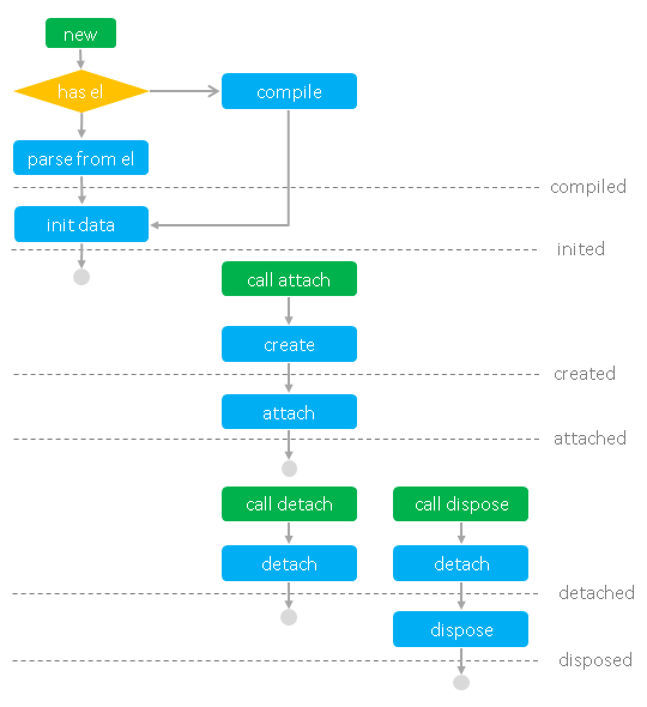

<!DOCTYPE html>
<html>
<head><meta name="generator" content="Hexo 3.9.0">
  <meta charset="utf-8">
  <meta name="description" content="San - A Flexible JavaScript Component Framework">
  <meta name="keywords" content="San,JavaScript,Framework,MVVM,Component,Web">
  <meta name="apple-mobile-web-app-capable" content="yes">
  <link rel="shortcut icon" href="/san/img/favicon.ico" type="image/x-icon">
  <link rel="apple-touch-icon" href="/san/img/icons/icon-144x144.png">
  
  <title>组件 | San</title>
  <meta name="viewport" content="width=device-width, initial-scale=1, maximum-scale=1">
  <meta name="description" content="组件是 San 的基本单位，是独立的数据、逻辑、视图的封装单元。从页面的角度看，组件是 HTML 元素的扩展。从功能模式的角度看，组件是一个 ViewModel。 组件定义定义组件最基本的方法是，从 san.Component 继承。San 提供了 san.inherits 方法，用于继承。 12345678910function MyApp(options) &amp;#123;    san.Comp">
<meta property="og:type" content="article">
<meta property="og:title" content="组件">
<meta property="og:url" content="http://baidu.github.io/tutorial/component/index.html">
<meta property="og:site_name" content="San">
<meta property="og:description" content="组件是 San 的基本单位，是独立的数据、逻辑、视图的封装单元。从页面的角度看，组件是 HTML 元素的扩展。从功能模式的角度看，组件是一个 ViewModel。 组件定义定义组件最基本的方法是，从 san.Component 继承。San 提供了 san.inherits 方法，用于继承。 12345678910function MyApp(options) &amp;#123;    san.Comp">
<meta property="og:locale" content="default">
<meta property="og:image" content="http://baidu.github.io/img/life-cycle.png">
<meta property="og:updated_time" content="2020-11-13T02:33:11.829Z">
<meta name="twitter:card" content="summary">
<meta name="twitter:title" content="组件">
<meta name="twitter:description" content="组件是 San 的基本单位，是独立的数据、逻辑、视图的封装单元。从页面的角度看，组件是 HTML 元素的扩展。从功能模式的角度看，组件是一个 ViewModel。 组件定义定义组件最基本的方法是，从 san.Component 继承。San 提供了 san.inherits 方法，用于继承。 12345678910function MyApp(options) &amp;#123;    san.Comp">
<meta name="twitter:image" content="http://baidu.github.io/img/life-cycle.png">
  
    <link rel="alternate" href="/atom.xml" title="San" type="application/atom+xml">
  
  
    <link rel="icon" href="/favicon.png">
  
  <link rel="manifest" href="/san/manifest.json">

  <link rel="stylesheet" href="/san/css/font-awesome.min.css">
  <link rel="stylesheet" href="/san/css/bootstrap.min.css">
  <link rel="stylesheet" href="/san/css/style.css">
  <link rel="stylesheet" href="/san/css/site.css">
  <link rel="stylesheet" href="/san/css/article.css">
  <link rel="stylesheet" href="/san/css/code.css">
  
  <script>
var _hmt = _hmt || [];
(function() {
  var hm = document.createElement("script");
  hm.src = "https://hm.baidu.com/hm.js?3fd0e328e9b2f9b1af04ac25c143093f";
  var s = document.getElementsByTagName("script")[0]; 
  s.parentNode.insertBefore(hm, s);
})();
</script>

  <!-- search -->
  <link rel="stylesheet" href="https://cdn.jsdelivr.net/docsearch.js/2/docsearch.min.css">


</head>
</html>
<body style="background: #01222d;">
  <div class="body-inner">
  <header>
    <a href="/san/" class="logo-s-link">
        
        </a>
    <a id="mobile-nav-toggle">
      <span class="mobile-nav-toggle-bar"></span>
      
      <span class="mobile-nav-toggle-bar"></span>
    </a>

    <div class="header-content">
        <nav class="header-content-nav">
            <ul>
                <li><a class="router" href="/san/tutorial/start/">教程</a>
                <li><a class="router" href="/san/practice/">指南</a>
                <li><a class="router" href="/san/example/">示例</a>
                <li><a class="router" href="/san/doc/api/">API</a>
                <li><a class="router" href="https://github.com/baidu/san" class="github" target="_blank">
                    
                </a>
                <li>
                </li>
            </ul>
            <div class="search-input">
                <input type="text" id="san-query-input" placeholder="Search" class="search-query st-default-search-input"/>
                <svg t="1502693727354" class="icon" style="" viewBox="0 0 1024 1024" version="1.1" xmlns="http://www.w3.org/2000/svg" p-id="1431" xmlns:xlink="http://www.w3.org/1999/xlink" width="200" height="200"><defs><style type="text/css"></style></defs><path d="M817.243 742.793l152.765 153.11-76.72 76.547-152.765-153.11zM685.498 258.674c-118.486-118.541-310.63-118.541-429.171 0-118.542 118.542-118.542 310.686 0 429.172 54.911 54.928 130.781 88.903 214.586 88.903 83.804 0 159.674-33.977 214.585-88.903 54.928-54.913 88.903-130.782 88.903-214.587 0-83.804-33.977-159.674-88.903-214.585zM190.258 753.915c-71.856-71.838-116.303-171.092-116.303-280.727 0-219.233 177.723-396.956 396.956-396.956s396.956 177.723 396.956 396.956c0 109.635-44.446 208.89-116.302 280.726-71.833 71.814-171.057 116.229-280.656 116.229s-208.822-44.415-280.656-116.229l0.003 0.001z" p-id="1432"></path></svg>
            </div>

            <a class="header-lang" href="/san/en/tutorial/component/">EN</a>
        </nav>
    </div>
</header>
<script type="text/javascript" src="https://cdn.jsdelivr.net/docsearch.js/2/docsearch.min.js"></script>
<script type="text/javascript">
    var Input = document.getElementById('san-query-input');
    var Icon = document.getElementsByClassName('icon')[0];
    docsearch({
        apiKey: '1c360e1f2503c4fa59ea3d28e3b8f6b3',
        indexName: 'san',
        inputSelector: '#san-query-input',
        debug: false // Set debug to true if you want to inspect the dropdown
    });
</script>
  <main>
<aside class="recommend">    <dl>
        <dt>教程</dt>
        <dd><a href="/san/tutorial/setup/">安装</a></dd>
        <dd><a href="/san/tutorial/background/">背景</a></dd>
        <dd><a href="/san/tutorial/start/">开始</a></dd>
        <dd><a href="/san/tutorial/template/">模板</a></dd>
        <dd><a href="/san/tutorial/data-method/">数据操作</a></dd>
        <dd><a href="/san/tutorial/data-checking/">数据校验</a></dd>
        <dd><a href="/san/tutorial/style/">样式</a></dd>
        <dd><a href="/san/tutorial/if/">条件</a></dd>
        <dd><a href="/san/tutorial/for/">循环</a></dd>
        <dd><a href="/san/tutorial/event/">事件处理</a></dd>
        <dd><a href="/san/tutorial/form/">表单</a></dd>
        <dd><a href="/san/tutorial/slot/">插槽</a></dd>
        <dd><a href="/san/tutorial/transition/">过渡</a></dd>
        <dd><a href="/san/tutorial/component/" class="recommend-active">组件</a></dd>
        <dd><a href="/san/tutorial/reverse/">组件反解</a></dd>
        <dd><a href="/san/tutorial/ssr/">服务端渲染</a></dd>

        <dt>了解更多</dt>
        <dd><a href="/san/doc/api/">组件 API</a></dd>
        <dd><a href="/san/doc/main-members/">主模块 API</a></dd>
        <dd><a href="https://github.com/baidu/san/blob/master/doc/anode.md" target="_blank">ANode DOC</a></dd>
        <dd><a href="https://github.com/baidu/san/blob/master/doc/anode-pack.md" target="_blank">APack DOC</a></dd>
        <dd><a href="https://github.com/baidu/san/tree/master/dist" target="_blank">发布版本说明</a></dd>
        <dd><a href="https://github.com/baidu/san/blob/master/CHANGELOG.md" target="_blank">版本更新日志</a></dd>

        <dt>周边</dt>
        <dd><a href="https://github.com/baidu/san-devtools" target="_blank">san-devtools</a></dd>
        <dd><a href="https://ecomfe.github.io/santd/" target="_blank">santd</a></dd>
        <dd><a href="https://github.com/baidu/san-router" target="_blank">san-router</a></dd>
        <dd><a href="https://github.com/baidu/san-store" target="_blank">san-store</a></dd>
        <dd><a href="https://github.com/baidu/san-update" target="_blank">san-update</a></dd>
        <dd><a href="https://baidu.github.io/san-ssr/" target="_blank">san-ssr</a></dd>
        <dd><a href="https://github.com/ecomfe/san-cli" target="_blank">san-cli</a></dd>
        <dd><a href="https://github.com/ecomfe/san-loader" target="_blank">san-loader</a></dd>
        <dd><a href="https://github.com/baidu/san-factory" target="_blank">san-factory</a></dd>
        <dd><a href="https://github.com/ssddi456/drei" target="_blank">drei</a></dd>
        <dd><a href="https://ecomfe.github.io/san-mui/" target="_blank">san-mui</a></dd>
        <dd><a href="https://github.com/ecomfe/san-anode-utils" target="_blank">san-anode-utils</a></dd>
        <dd><a href="https://github.com/ecomfe/san-test-utils" target="_blank">san-test-utils</a></dd>

        <dt>示例</dt>
        <dd><a href="https://github.com/baidu/san/tree/master/example/start" target="_blank">一些小示例</a></dd>
        <dd><a href="https://github.com/baidu/san/tree/master/example/todos-amd" target="_blank">Todos (AMD)</a></dd>
        <dd><a href="https://github.com/baidu/san/tree/master/example/todos-esnext" target="_blank">Todos (ESNext)</a></dd>
        <dd><a href="https://github.com/baidu/san-store/tree/master/example/todos" target="_blank">Todos (单向流)</a></dd>
    </dl>
</aside>
<article id="post-tutorial/component" class="article article-type-post" itemscope itemprop="blogPost">
  <div class="article-inner">
    
    
        <div class="article-title">

  
    <h1 class="article-title" itemprop="name">
      组件
    </h1>
  

  <a href="https://github.com/baidu/san-website/tree/master/source/_posts/tutorial/component.md" class="article-edit-link" title="编辑本文" target="_blank">  编辑本文</a>
</div>
    
    <div class="article-entry" itemprop="articleBody">
      
        <p>组件是 San 的基本单位，是独立的数据、逻辑、视图的封装单元。从页面的角度看，组件是 HTML 元素的扩展。从功能模式的角度看，组件是一个 ViewModel。</p>
<h2 id="组件定义"><a href="#组件定义" class="headerlink" title="组件定义"></a>组件定义</h2><p>定义组件最基本的方法是，从 <strong>san.Component</strong> 继承。San 提供了 <strong>san.inherits</strong> 方法，用于继承。</p>
<figure class="highlight javascript"><table><tr><td class="gutter"><pre><span class="line">1</span><br><span class="line">2</span><br><span class="line">3</span><br><span class="line">4</span><br><span class="line">5</span><br><span class="line">6</span><br><span class="line">7</span><br><span class="line">8</span><br><span class="line">9</span><br><span class="line">10</span><br></pre></td><td class="code"><pre><span class="line"><span class="function"><span class="keyword">function</span> <span class="title">MyApp</span>(<span class="params">options</span>) </span>&#123;</span><br><span class="line">    san.Component.call(<span class="keyword">this</span>, options);</span><br><span class="line">&#125;</span><br><span class="line">san.inherits(MyApp, san.Component);</span><br><span class="line"></span><br><span class="line">MyApp.prototype.template = <span class="string">'&lt;ul&gt;&lt;li s-for="item in list"&gt;&#123;&#123;item&#125;&#125;&lt;/li&gt;&lt;/ul&gt;'</span>;</span><br><span class="line"></span><br><span class="line">MyApp.prototype.attached = <span class="function"><span class="keyword">function</span> (<span class="params"></span>) </span>&#123;</span><br><span class="line">    <span class="keyword">this</span>.data.set(<span class="string">'list'</span>, [<span class="string">'san'</span>, <span class="string">'er'</span>, <span class="string">'esui'</span>, <span class="string">'etpl'</span>, <span class="string">'esl'</span>]);</span><br><span class="line">&#125;;</span><br></pre></td></tr></table></figure>
<p>然后，通过 new 的方式就可以使用这个组件了。当然，通常你可能希望让组件出现在页面上，所以需要调用 attach 方法，将组件添加到页面的相应位置。</p>
<figure class="highlight javascript"><table><tr><td class="gutter"><pre><span class="line">1</span><br><span class="line">2</span><br></pre></td><td class="code"><pre><span class="line"><span class="keyword">var</span> myApp = <span class="keyword">new</span> MyApp();</span><br><span class="line">myApp.attach(<span class="built_in">document</span>.body);</span><br></pre></td></tr></table></figure>
<p>通过继承的方式定义组件的好处是，当你使用 ESNext 时，你可以很自然的 extends。</p>
<p><code>注意</code>：由于 ESNext 没有能够编写 prototype 属性的语法，所以 San 对组件定义时的属性支持 static property。通过 ESNext 的 extends 继承时，template / filters / components 属性请使用 static property 的方式定义。</p>
<figure class="highlight javascript"><table><tr><td class="gutter"><pre><span class="line">1</span><br><span class="line">2</span><br><span class="line">3</span><br><span class="line">4</span><br><span class="line">5</span><br><span class="line">6</span><br><span class="line">7</span><br><span class="line">8</span><br><span class="line">9</span><br><span class="line">10</span><br><span class="line">11</span><br><span class="line">12</span><br><span class="line">13</span><br><span class="line">14</span><br><span class="line">15</span><br><span class="line">16</span><br><span class="line">17</span><br></pre></td><td class="code"><pre><span class="line"><span class="keyword">import</span> &#123;Component&#125; <span class="keyword">from</span> <span class="string">'san'</span>;</span><br><span class="line"></span><br><span class="line"><span class="class"><span class="keyword">class</span> <span class="title">HelloComponent</span> <span class="keyword">extends</span> <span class="title">Component</span> </span>&#123;</span><br><span class="line"></span><br><span class="line">    <span class="keyword">constructor</span>(options) &#123;</span><br><span class="line">        <span class="keyword">super</span>(options);</span><br><span class="line">        <span class="comment">// .....</span></span><br><span class="line">    &#125;</span><br><span class="line"></span><br><span class="line">    <span class="keyword">static</span> template = <span class="string">'&lt;p&gt;Hello &#123;&#123;name&#125;&#125;!&lt;/p&gt;'</span>;</span><br><span class="line"></span><br><span class="line">    initData() &#123;</span><br><span class="line">        <span class="keyword">return</span> &#123;<span class="attr">name</span>: <span class="string">'San'</span>&#125;</span><br><span class="line">    &#125;</span><br><span class="line">&#125;</span><br><span class="line"></span><br><span class="line"><span class="keyword">new</span> HelloComponent().attach(<span class="built_in">document</span>.body);</span><br></pre></td></tr></table></figure>
<p>对于不使用 ESNext 时，写一个 function 然后调用 <strong>san.inherits</strong> 再写各种 prototype 实在是有点麻烦，San 提供了快捷方法 <strong>san.defineComponent</strong> 用于方便地定义组件。</p>
<figure class="highlight javascript"><table><tr><td class="gutter"><pre><span class="line">1</span><br><span class="line">2</span><br><span class="line">3</span><br><span class="line">4</span><br><span class="line">5</span><br><span class="line">6</span><br><span class="line">7</span><br></pre></td><td class="code"><pre><span class="line"><span class="keyword">var</span> MyApp = san.defineComponent(&#123;</span><br><span class="line">    template: <span class="string">'&lt;ul&gt;&lt;li s-for="item in list"&gt;&#123;&#123;item&#125;&#125;&lt;/li&gt;&lt;/ul&gt;'</span>,</span><br><span class="line"></span><br><span class="line">    attached: <span class="function"><span class="keyword">function</span> (<span class="params"></span>) </span>&#123;</span><br><span class="line">        <span class="keyword">this</span>.data.set(<span class="string">'list'</span>, [<span class="string">'san'</span>, <span class="string">'er'</span>, <span class="string">'esui'</span>, <span class="string">'etpl'</span>, <span class="string">'esl'</span>]);</span><br><span class="line">    &#125;</span><br><span class="line">&#125;);</span><br></pre></td></tr></table></figure>
<h2 id="生命周期"><a href="#生命周期" class="headerlink" title="生命周期"></a>生命周期</h2><p>San 的组件是 HTML 元素扩展的风格，所以其生命周期与 WebComponents 相符合。</p>
<ul>
<li><code>compiled</code> - 组件视图模板编译完成</li>
<li><code>inited</code> - 组件实例初始化完成</li>
<li><code>created</code> - 组件元素创建完成</li>
<li><code>attached</code> - 组件已被附加到页面中</li>
<li><code>detached</code> - 组件从页面中移除</li>
<li><code>disposed</code> - 组件卸载完成</li>
</ul>
<p>组件的生命周期有这样的一些特点：</p>
<ul>
<li>生命周期代表组件的状态，生命周期本质就是状态管理。</li>
<li>在生命周期的不同阶段，组件对应的钩子函数会被触发运行。</li>
<li>并存。比如 attached 和 created 等状态是同时并存的。</li>
<li>互斥。attached 和 detached 是互斥的，disposed 会互斥掉其它所有的状态。</li>
<li>有的时间点并不代表组件状态，只代表某个行为。当行为完成时，钩子函数也会触发。如 <strong>updated</strong> 代表每次数据变化导致的视图变更完成。</li>
</ul>
<p>通过生命周期的钩子函数，我们可以在生命周期到达时做一些事情。比如在生命周期 <strong>attached</strong> 中发起获取数据的请求，在请求返回后更新数据，使视图刷新。</p>
<figure class="highlight javascript"><table><tr><td class="gutter"><pre><span class="line">1</span><br><span class="line">2</span><br><span class="line">3</span><br><span class="line">4</span><br><span class="line">5</span><br><span class="line">6</span><br><span class="line">7</span><br><span class="line">8</span><br><span class="line">9</span><br><span class="line">10</span><br><span class="line">11</span><br><span class="line">12</span><br><span class="line">13</span><br><span class="line">14</span><br><span class="line">15</span><br><span class="line">16</span><br><span class="line">17</span><br></pre></td><td class="code"><pre><span class="line"><span class="keyword">var</span> ListComponent = san.defineComponent(&#123;</span><br><span class="line">    template: <span class="string">'&lt;ul&gt;&lt;li s-for="item in list"&gt;&#123;&#123;item&#125;&#125;&lt;/li&gt;&lt;/ul&gt;'</span>,</span><br><span class="line"></span><br><span class="line">    initData: <span class="function"><span class="keyword">function</span> (<span class="params"></span>) </span>&#123;</span><br><span class="line">        <span class="keyword">return</span> &#123;</span><br><span class="line">            list: []</span><br><span class="line">        &#125;;</span><br><span class="line">    &#125;,</span><br><span class="line"></span><br><span class="line">    attached: <span class="function"><span class="keyword">function</span> (<span class="params"></span>) </span>&#123;</span><br><span class="line">        requestList().then(<span class="keyword">this</span>.updateList.bind(<span class="keyword">this</span>));</span><br><span class="line">    &#125;,</span><br><span class="line"></span><br><span class="line">    updateList: <span class="function"><span class="keyword">function</span> (<span class="params">list</span>) </span>&#123;</span><br><span class="line">        <span class="keyword">this</span>.data.set(<span class="string">'list'</span>, list);</span><br><span class="line">    &#125;</span><br><span class="line">&#125;);</span><br></pre></td></tr></table></figure>
<p>下图详细描述了组件的生存过程：</p>
<p></p>
<h2 id="视图"><a href="#视图" class="headerlink" title="视图"></a>视图</h2><h3 id="视图模板"><a href="#视图模板" class="headerlink" title="视图模板"></a>视图模板</h3><p>定义组件时，通过 template 可以定义组件的视图模板。</p>
<figure class="highlight plain"><table><tr><td class="gutter"><pre><span class="line">1</span><br><span class="line">2</span><br><span class="line">3</span><br><span class="line">4</span><br><span class="line">5</span><br><span class="line">6</span><br><span class="line">7</span><br><span class="line">8</span><br><span class="line">9</span><br><span class="line">10</span><br><span class="line">11</span><br><span class="line">12</span><br><span class="line">13</span><br></pre></td><td class="code"><pre><span class="line">san.defineComponent(&#123;</span><br><span class="line">    template: &apos;&lt;div&gt;&apos;</span><br><span class="line">        + &apos;&lt;label&gt;&lt;input type=&quot;checkbox&quot; value=&quot;errorrik&quot; checked=&quot;&#123;= online =&#125;&quot;&gt;errorrik&lt;/label&gt;&apos;</span><br><span class="line">        + &apos;&lt;label&gt;&lt;input type=&quot;checkbox&quot; value=&quot;otakustay&quot; checked=&quot;&#123;= online =&#125;&quot;&gt;otakustay&lt;/label&gt;&apos;</span><br><span class="line">        + &apos;&lt;label&gt;&lt;input type=&quot;checkbox&quot; value=&quot;firede&quot; checked=&quot;&#123;= online =&#125;&quot;&gt;firede&lt;/label&gt;&apos;</span><br><span class="line">        + &apos;&lt;/div&gt;&apos;,</span><br><span class="line"></span><br><span class="line">    initData: function () &#123;</span><br><span class="line">        return &#123;</span><br><span class="line">            online: [&apos;errorrik&apos;, &apos;otakustay&apos;]</span><br><span class="line">        &#125;;</span><br><span class="line">    &#125;</span><br><span class="line">&#125;);</span><br></pre></td></tr></table></figure>
<p>通常，将 HTML 片段写在 JavaScript 中是不友好的，我们可以把模板写在单独的文件里，通过工具或装载器去管理。</p>
<p>在 webpack + ESNext 环境下引用模板：</p>
<figure class="highlight plain"><table><tr><td class="gutter"><pre><span class="line">1</span><br></pre></td><td class="code"><pre><span class="line">待补充</span><br></pre></td></tr></table></figure>
<p>在 AMD 环境下通过 text plugin 引用模板：</p>
<figure class="highlight javascript"><table><tr><td class="gutter"><pre><span class="line">1</span><br><span class="line">2</span><br><span class="line">3</span><br><span class="line">4</span><br><span class="line">5</span><br><span class="line">6</span><br><span class="line">7</span><br><span class="line">8</span><br><span class="line">9</span><br></pre></td><td class="code"><pre><span class="line">san.defineComponent(&#123;</span><br><span class="line">    template: <span class="built_in">require</span>(<span class="string">'text!./template.html'</span>),</span><br><span class="line"></span><br><span class="line">    initData: <span class="function"><span class="keyword">function</span> (<span class="params"></span>) </span>&#123;</span><br><span class="line">        <span class="keyword">return</span> &#123;</span><br><span class="line">            online: [<span class="string">'errorrik'</span>, <span class="string">'otakustay'</span>]</span><br><span class="line">        &#125;;</span><br><span class="line">    &#125;</span><br><span class="line">&#125;);</span><br></pre></td></tr></table></figure>
<p><code>强调</code>：San 要求组件对应 <strong>一个</strong> HTML 元素，所以视图模板定义时，只能包含一个 HTML 元素，其它所有内容需要放在这个元素下。</p>
<figure class="highlight html"><table><tr><td class="gutter"><pre><span class="line">1</span><br><span class="line">2</span><br><span class="line">3</span><br><span class="line">4</span><br><span class="line">5</span><br><span class="line">6</span><br><span class="line">7</span><br><span class="line">8</span><br><span class="line">9</span><br></pre></td><td class="code"><pre><span class="line"><span class="comment">&lt;!-- 正确 --&gt;</span></span><br><span class="line"><span class="tag">&lt;<span class="name">dl</span>&gt;</span></span><br><span class="line">    <span class="tag">&lt;<span class="name">dt</span>&gt;</span>name - email<span class="tag">&lt;/<span class="name">dt</span>&gt;</span></span><br><span class="line">    <span class="tag">&lt;<span class="name">dd</span> <span class="attr">s-for</span>=<span class="string">"p in persons"</span> <span class="attr">title</span>=<span class="string">"&#123;&#123;p.name&#125;&#125;"</span>&gt;</span>&#123;&#123;p.name&#125;&#125;(&#123;&#123;dept&#125;&#125;) - &#123;&#123;p.email&#125;&#125;<span class="tag">&lt;/<span class="name">dd</span>&gt;</span></span><br><span class="line"><span class="tag">&lt;/<span class="name">dl</span>&gt;</span></span><br><span class="line"></span><br><span class="line"><span class="comment">&lt;!-- 错误 --&gt;</span></span><br><span class="line"><span class="tag">&lt;<span class="name">p</span>&gt;</span>name<span class="tag">&lt;/<span class="name">p</span>&gt;</span></span><br><span class="line"><span class="tag">&lt;<span class="name">p</span>&gt;</span>email<span class="tag">&lt;/<span class="name">p</span>&gt;</span></span><br></pre></td></tr></table></figure>
<p>组件对应的 HTML 元素可能是由其 <strong>owner</strong> 组件通过视图模板指定的，视图模板不好直接定死对应 HTML 元素的标签。此时可以将视图模板对应的 HTML 元素指定为 <strong>template</strong>。</p>
<figure class="highlight html"><table><tr><td class="gutter"><pre><span class="line">1</span><br></pre></td><td class="code"><pre><span class="line"><span class="tag">&lt;<span class="name">template</span> <span class="attr">class</span>=<span class="string">"ui-timepicker"</span>&gt;</span>&#123;&#123; value | valueText &#125;&#125;<span class="tag">&lt;/<span class="name">template</span>&gt;</span></span><br></pre></td></tr></table></figure>
<h3 id="插槽"><a href="#插槽" class="headerlink" title="插槽"></a>插槽</h3><p>在视图模板中可以通过 slot 声明一个插槽的位置，其位置的内容可以由外层组件定义。具体请参考<a href="../slot/">插槽</a>文档。</p>
<figure class="highlight javascript"><table><tr><td class="gutter"><pre><span class="line">1</span><br><span class="line">2</span><br><span class="line">3</span><br><span class="line">4</span><br><span class="line">5</span><br><span class="line">6</span><br><span class="line">7</span><br><span class="line">8</span><br><span class="line">9</span><br><span class="line">10</span><br><span class="line">11</span><br><span class="line">12</span><br><span class="line">13</span><br><span class="line">14</span><br><span class="line">15</span><br><span class="line">16</span><br><span class="line">17</span><br><span class="line">18</span><br><span class="line">19</span><br><span class="line">20</span><br><span class="line">21</span><br><span class="line">22</span><br><span class="line">23</span><br><span class="line">24</span><br><span class="line">25</span><br></pre></td><td class="code"><pre><span class="line"><span class="keyword">var</span> Panel = san.defineComponent(&#123;</span><br><span class="line">    template: <span class="string">'&lt;div&gt;'</span></span><br><span class="line">        + <span class="string">'  &lt;div class="head" on-click="toggle"&gt;title&lt;/div&gt;'</span></span><br><span class="line">        + <span class="string">'  &lt;p style="&#123;&#123;fold | yesToBe(\'display:none\')&#125;&#125;"&gt;&lt;slot&gt;&lt;/slot&gt;&lt;/p&gt;'</span></span><br><span class="line">        + <span class="string">'&lt;/div&gt;'</span>,</span><br><span class="line"></span><br><span class="line">    toggle: <span class="function"><span class="keyword">function</span> (<span class="params"></span>) </span>&#123;</span><br><span class="line">        <span class="keyword">this</span>.data.set(<span class="string">'fold'</span>, !<span class="keyword">this</span>.data.get(<span class="string">'fold'</span>));</span><br><span class="line">    &#125;</span><br><span class="line">&#125;);</span><br><span class="line"></span><br><span class="line"><span class="keyword">var</span> MyComponent = san.defineComponent(&#123;</span><br><span class="line">    components: &#123;</span><br><span class="line">        <span class="string">'ui-panel'</span>: Panel</span><br><span class="line">    &#125;,</span><br><span class="line"></span><br><span class="line">    template: <span class="string">'&lt;div&gt;&lt;ui-panel&gt;Hello San&lt;/ui-panel&gt;&lt;/div&gt;'</span></span><br><span class="line">&#125;);</span><br><span class="line"></span><br><span class="line"><span class="comment">/* MyComponent渲染结果</span></span><br><span class="line"><span class="comment">&lt;div&gt;</span></span><br><span class="line"><span class="comment">  &lt;div class="head"&gt;title&lt;/div&gt;</span></span><br><span class="line"><span class="comment">  &lt;p style="display:none"&gt;Hello San&lt;/p&gt;</span></span><br><span class="line"><span class="comment">&lt;/div&gt;</span></span><br><span class="line"><span class="comment">*/</span></span><br></pre></td></tr></table></figure>
<h3 id="el"><a href="#el" class="headerlink" title="el"></a>el</h3><p>组件实例的属性 <strong>el</strong> 表示组件对应的 HTML 元素，组件初始化时可以通过 option 传入。</p>
<p>基本上在编写组件时不需要关心它，但是在初始化组件时如果传入 <strong>el</strong>，意味着让组件以此元素作为组件根元素。元素将：</p>
<ul>
<li>不会使用预设的 template 渲染视图</li>
<li>不会创建根元素</li>
<li>直接到达 compiled、created、attached 生命周期</li>
</ul>
<p>有时我们为了首屏时间，期望初始的视图是直接的 HTML，不希望初始视图是由组件渲染的。但是我们希望组件为我们管理数据、逻辑与视图，后续的用户交互行为与视图变换通过组件管理，此时就可以通过 <strong>el</strong> 传入一个现有元素。</p>
<p>组件将以 <strong>el</strong> 传入的元素作为组件根元素并反解析出视图结构。这个过程我们称作 <strong>组件反解</strong>。详细请参考<a href="../reverse/">组件反解</a>文档。</p>
<h2 id="数据"><a href="#数据" class="headerlink" title="数据"></a>数据</h2><p>所有组件数据相关的操作，都由组件实例的 <strong>data</strong> 成员提供。</p>
<h3 id="获取数据"><a href="#获取数据" class="headerlink" title="获取数据"></a>获取数据</h3><p>通过 <strong>data.get</strong> 方法可以获取数据。</p>
<figure class="highlight javascript"><table><tr><td class="gutter"><pre><span class="line">1</span><br><span class="line">2</span><br><span class="line">3</span><br><span class="line">4</span><br><span class="line">5</span><br><span class="line">6</span><br></pre></td><td class="code"><pre><span class="line">san.defineComponent(&#123;</span><br><span class="line">    attached: <span class="function"><span class="keyword">function</span> (<span class="params"></span>) </span>&#123;</span><br><span class="line">        <span class="keyword">var</span> params = <span class="keyword">this</span>.data.get(<span class="string">'params'</span>);</span><br><span class="line">        <span class="keyword">this</span>.data.set(<span class="string">'list'</span>, getList(params[<span class="number">1</span>]));</span><br><span class="line">    &#125;</span><br><span class="line">&#125;);</span><br></pre></td></tr></table></figure>
<p><strong>data.get</strong> 方法接受一个表示 property accessor 的字符串，所以上面的例子也可以写成这样：</p>
<figure class="highlight javascript"><table><tr><td class="gutter"><pre><span class="line">1</span><br><span class="line">2</span><br><span class="line">3</span><br><span class="line">4</span><br><span class="line">5</span><br><span class="line">6</span><br></pre></td><td class="code"><pre><span class="line">san.defineComponent(&#123;</span><br><span class="line">    attached: <span class="function"><span class="keyword">function</span> (<span class="params"></span>) </span>&#123;</span><br><span class="line">        <span class="keyword">var</span> param = <span class="keyword">this</span>.data.get(<span class="string">'params[1]'</span>);</span><br><span class="line">        <span class="keyword">this</span>.data.set(<span class="string">'list'</span>, getList(param));</span><br><span class="line">    &#125;</span><br><span class="line">&#125;);</span><br></pre></td></tr></table></figure>
<h3 id="操作数据"><a href="#操作数据" class="headerlink" title="操作数据"></a>操作数据</h3><p><strong>data</strong> 上提供了一些数据操作的方法，具体请参考<a href="../data-method/">数据操作</a>文档。</p>
<h3 id="初始数据"><a href="#初始数据" class="headerlink" title="初始数据"></a>初始数据</h3><p>组件在实例化时可以通过 option 传入 <strong>data</strong>，指定组件初始化时的数据。</p>
<figure class="highlight javascript"><table><tr><td class="gutter"><pre><span class="line">1</span><br><span class="line">2</span><br><span class="line">3</span><br><span class="line">4</span><br><span class="line">5</span><br><span class="line">6</span><br><span class="line">7</span><br><span class="line">8</span><br><span class="line">9</span><br><span class="line">10</span><br></pre></td><td class="code"><pre><span class="line"><span class="keyword">var</span> MyApp = san.defineComponent(&#123;</span><br><span class="line">    template: <span class="string">'&lt;ul&gt;&lt;li s-for="item in list"&gt;&#123;&#123;item&#125;&#125;&lt;/li&gt;&lt;/ul&gt;'</span></span><br><span class="line">&#125;);</span><br><span class="line"></span><br><span class="line"><span class="keyword">var</span> myApp = <span class="keyword">new</span> MyApp(&#123;</span><br><span class="line">    data: &#123;</span><br><span class="line">        list: [<span class="string">'san'</span>, <span class="string">'er'</span>, <span class="string">'esui'</span>, <span class="string">'etpl'</span>, <span class="string">'esl'</span>]</span><br><span class="line">    &#125;</span><br><span class="line">&#125;);</span><br><span class="line">myApp.attach(<span class="built_in">document</span>.body);</span><br></pre></td></tr></table></figure>
<p>new 时传入初始数据是针对实例的特例需求。当我们希望在定义组件时，就设置每个实例的初始数据，可以通过 <strong>initData</strong> 方法指定组件初始化时的数据。<strong>initData</strong> 方法返回组件实例的初始化数据。</p>
<figure class="highlight javascript"><table><tr><td class="gutter"><pre><span class="line">1</span><br><span class="line">2</span><br><span class="line">3</span><br><span class="line">4</span><br><span class="line">5</span><br><span class="line">6</span><br><span class="line">7</span><br><span class="line">8</span><br><span class="line">9</span><br><span class="line">10</span><br><span class="line">11</span><br><span class="line">12</span><br></pre></td><td class="code"><pre><span class="line"><span class="keyword">var</span> MyApp = san.defineComponent(&#123;</span><br><span class="line">    template: <span class="string">'&lt;ul&gt;&lt;li s-for="item in list"&gt;&#123;&#123;item&#125;&#125;&lt;/li&gt;&lt;/ul&gt;'</span>,</span><br><span class="line"></span><br><span class="line">    initData: <span class="function"><span class="keyword">function</span> (<span class="params"></span>) </span>&#123;</span><br><span class="line">        <span class="keyword">return</span> &#123;</span><br><span class="line">            list: [<span class="string">'san'</span>, <span class="string">'er'</span>, <span class="string">'esui'</span>, <span class="string">'etpl'</span>, <span class="string">'esl'</span>]</span><br><span class="line">        &#125;;</span><br><span class="line">    &#125;</span><br><span class="line">&#125;);</span><br><span class="line"></span><br><span class="line"><span class="keyword">var</span> myApp = <span class="keyword">new</span> MyApp();</span><br><span class="line">myApp.attach(<span class="built_in">document</span>.body);</span><br></pre></td></tr></table></figure>
<h3 id="计算数据"><a href="#计算数据" class="headerlink" title="计算数据"></a>计算数据</h3><p>有时候，一个数据项的值可能由其他数据项计算得来，这时我们可以通过 <strong>computed</strong> 定义计算数据。 <strong>computed</strong> 是一个对象，key 为计算数据项的名称，value 是返回数据项值的函数。</p>
<figure class="highlight javascript"><table><tr><td class="gutter"><pre><span class="line">1</span><br><span class="line">2</span><br><span class="line">3</span><br><span class="line">4</span><br><span class="line">5</span><br><span class="line">6</span><br><span class="line">7</span><br><span class="line">8</span><br><span class="line">9</span><br><span class="line">10</span><br></pre></td><td class="code"><pre><span class="line">san.defineComponent(&#123;</span><br><span class="line">    template: <span class="string">'&lt;a&gt;&#123;&#123;name&#125;&#125;&lt;/a&gt;'</span>,</span><br><span class="line"></span><br><span class="line">    <span class="comment">// name 数据项由 firstName 和 lastName 计算得来</span></span><br><span class="line">    computed: &#123;</span><br><span class="line">        name: <span class="function"><span class="keyword">function</span> (<span class="params"></span>) </span>&#123;</span><br><span class="line">            <span class="keyword">return</span> <span class="keyword">this</span>.data.get(<span class="string">'firstName'</span>) + <span class="string">' '</span> + <span class="keyword">this</span>.data.get(<span class="string">'lastName'</span>);</span><br><span class="line">        &#125;</span><br><span class="line">    &#125;</span><br><span class="line">&#125;);</span><br></pre></td></tr></table></figure>
<p>上面的例子中，name 数据项是计算数据，依赖 firstName 和 lastName 数据项，其值由 firstName 和 lastName 计算得来。</p>
<p><code>注意</code>：计算数据的函数中只能使用 <em>this.data.get</em> 方法获取数据项的值，不能通过 this.method 调用组件方法，也不能通过 this.data.set 设置组件数据。</p>
<figure class="highlight javascript"><table><tr><td class="gutter"><pre><span class="line">1</span><br><span class="line">2</span><br><span class="line">3</span><br><span class="line">4</span><br><span class="line">5</span><br><span class="line">6</span><br><span class="line">7</span><br><span class="line">8</span><br><span class="line">9</span><br><span class="line">10</span><br><span class="line">11</span><br><span class="line">12</span><br><span class="line">13</span><br><span class="line">14</span><br></pre></td><td class="code"><pre><span class="line">san.defineComponent(&#123;</span><br><span class="line">    template: <span class="string">'&lt;a&gt;&#123;&#123;info&#125;&#125;&lt;/a&gt;'</span>,</span><br><span class="line"></span><br><span class="line">    <span class="comment">// name 数据项由 firstName 和 lastName 计算得来</span></span><br><span class="line">    computed: &#123;</span><br><span class="line">        name: <span class="function"><span class="keyword">function</span> (<span class="params"></span>) </span>&#123;</span><br><span class="line">            <span class="keyword">return</span> <span class="keyword">this</span>.data.get(<span class="string">'firstName'</span>) + <span class="string">' '</span> + <span class="keyword">this</span>.data.get(<span class="string">'lastName'</span>);</span><br><span class="line">        &#125;,</span><br><span class="line"></span><br><span class="line">        info: <span class="function"><span class="keyword">function</span> (<span class="params"></span>) </span>&#123;</span><br><span class="line">            <span class="keyword">return</span> <span class="keyword">this</span>.data.get(<span class="string">'name'</span>) + <span class="string">' - '</span> + <span class="keyword">this</span>.data.get(<span class="string">'email'</span>);</span><br><span class="line">        &#125;</span><br><span class="line">    &#125;</span><br><span class="line">&#125;);</span><br></pre></td></tr></table></figure>
<p>计算数据项可以依赖另外一个计算数据项，上面的例子中，info 项依赖的 name 项就是一个计算数据项。但是使用时一定要注意，不要形成计算数据项之间的循环依赖。</p>
<h2 id="过滤器"><a href="#过滤器" class="headerlink" title="过滤器"></a>过滤器</h2><p>在定义视图模板时，插值是常用的展现数据的方式。在编写插值时，我们常使用 <strong>过滤器</strong> 将数据转换成适合视图展现的形式。</p>
<figure class="highlight plain"><table><tr><td class="gutter"><pre><span class="line">1</span><br></pre></td><td class="code"><pre><span class="line">&#123;&#123;createTime | dateFormat(&apos;yyyy-MM-dd&apos;)&#125;&#125;</span><br></pre></td></tr></table></figure>
<h3 id="内置过滤器"><a href="#内置过滤器" class="headerlink" title="内置过滤器"></a>内置过滤器</h3><p>San 针对常用场景，内置了几个过滤器：</p>
<ul>
<li><code>html</code> - HTML 转义。当不指定过滤器时，默认使用此过滤器</li>
<li><code>url</code> - URL 转义</li>
<li><code>raw</code> - 不进行转义。当不想使用 HTML 转义时，使用此过滤器</li>
</ul>
<h3 id="定制过滤器"><a href="#定制过滤器" class="headerlink" title="定制过滤器"></a>定制过滤器</h3><p>通过定义组件的 <strong>filters</strong> 成员，可以指定组件的视图模板可以使用哪些过滤器。</p>
<figure class="highlight javascript"><table><tr><td class="gutter"><pre><span class="line">1</span><br><span class="line">2</span><br><span class="line">3</span><br><span class="line">4</span><br><span class="line">5</span><br><span class="line">6</span><br><span class="line">7</span><br><span class="line">8</span><br><span class="line">9</span><br></pre></td><td class="code"><pre><span class="line">san.defineComponent(&#123;</span><br><span class="line">    template: <span class="string">'&lt;a&gt;&#123;&#123;createTime | dateFormat("yyyy-MM-dd")&#125;&#125;&lt;/a&gt;'</span>,</span><br><span class="line"></span><br><span class="line">    filters: &#123;</span><br><span class="line">        dateFormat: <span class="function"><span class="keyword">function</span> (<span class="params">value, format</span>) </span>&#123;</span><br><span class="line">            <span class="keyword">return</span> moment(value).format(format);</span><br><span class="line">        &#125;</span><br><span class="line">    &#125;</span><br><span class="line">&#125;);</span><br></pre></td></tr></table></figure>
<p>过滤器函数的第一个参数是表达式对应的数据值，过滤器调用时传入的参数从第二个参数开始接在后面。</p>
<p><code>注意</code>：考虑到组件的独立性，San 没有提供全局过滤器注册的方法，组件要使用的过滤器必须在自身的 <strong>filters</strong> 中定义。</p>
<h2 id="组件层级"><a href="#组件层级" class="headerlink" title="组件层级"></a>组件层级</h2><p>我们知道组件体系下，组件必须是可嵌套的树形关系。下面从一段代码，做一些说明。在下面的代码中，AddForm 内部使用了两个自定义组件：ui-calendar 和 ui-timepicker。</p>
<figure class="highlight html"><table><tr><td class="gutter"><pre><span class="line">1</span><br><span class="line">2</span><br><span class="line">3</span><br><span class="line">4</span><br><span class="line">5</span><br><span class="line">6</span><br><span class="line">7</span><br><span class="line">8</span><br><span class="line">9</span><br><span class="line">10</span><br><span class="line">11</span><br><span class="line">12</span><br><span class="line">13</span><br><span class="line">14</span><br></pre></td><td class="code"><pre><span class="line"><span class="comment">&lt;!-- Template --&gt;</span></span><br><span class="line"><span class="tag">&lt;<span class="name">div</span> <span class="attr">class</span>=<span class="string">"form"</span>&gt;</span></span><br><span class="line">    <span class="tag">&lt;<span class="name">input</span> <span class="attr">type</span>=<span class="string">"text"</span> <span class="attr">class</span>=<span class="string">"form-title"</span> <span class="attr">placeholder</span>=<span class="string">"标题"</span> <span class="attr">value</span>=<span class="string">"&#123;= title =&#125;"</span>&gt;</span></span><br><span class="line">    <span class="tag">&lt;<span class="name">textarea</span> <span class="attr">class</span>=<span class="string">"form-desc"</span> <span class="attr">placeholder</span>=<span class="string">"备注"</span> <span class="attr">value</span>=<span class="string">"&#123;= desc =&#125;"</span>&gt;</span><span class="tag">&lt;/<span class="name">textarea</span>&gt;</span></span><br><span class="line"></span><br><span class="line">    <span class="tag">&lt;<span class="name">div</span>&gt;</span>预期完成时间：</span><br><span class="line">        <span class="tag">&lt;<span class="name">ui-calendar</span> <span class="attr">value</span>=<span class="string">"&#123;= endTimeDate =&#125;"</span> <span class="attr">s-ref</span>=<span class="string">"endDate"</span>&gt;</span><span class="tag">&lt;/<span class="name">ui-calendar</span>&gt;</span></span><br><span class="line">        <span class="tag">&lt;<span class="name">ui-timepicker</span> <span class="attr">value</span>=<span class="string">"&#123;= endTimeHour =&#125;"</span> <span class="attr">s-ref</span>=<span class="string">"endHour"</span>&gt;</span><span class="tag">&lt;/<span class="name">ui-timepicker</span>&gt;</span></span><br><span class="line">    <span class="tag">&lt;/<span class="name">div</span>&gt;</span></span><br><span class="line"></span><br><span class="line">    <span class="tag">&lt;<span class="name">div</span> <span class="attr">class</span>=<span class="string">"form-op"</span>&gt;</span></span><br><span class="line">        <span class="tag">&lt;<span class="name">button</span> <span class="attr">type</span>=<span class="string">"button"</span> <span class="attr">on-click</span>=<span class="string">"submit"</span>&gt;</span>ok<span class="tag">&lt;/<span class="name">button</span>&gt;</span></span><br><span class="line">    <span class="tag">&lt;/<span class="name">div</span>&gt;</span></span><br><span class="line"><span class="tag">&lt;/<span class="name">div</span>&gt;</span></span><br></pre></td></tr></table></figure>
<figure class="highlight javascript"><table><tr><td class="gutter"><pre><span class="line">1</span><br><span class="line">2</span><br><span class="line">3</span><br><span class="line">4</span><br><span class="line">5</span><br><span class="line">6</span><br><span class="line">7</span><br><span class="line">8</span><br><span class="line">9</span><br><span class="line">10</span><br><span class="line">11</span><br><span class="line">12</span><br><span class="line">13</span><br></pre></td><td class="code"><pre><span class="line"><span class="keyword">var</span> AddForm = san.defineComponent(&#123;</span><br><span class="line">    <span class="comment">// template</span></span><br><span class="line"></span><br><span class="line">    components: &#123;</span><br><span class="line">        <span class="string">'ui-timepicker'</span>: <span class="built_in">require</span>(<span class="string">'../ui/TimePicker'</span>),</span><br><span class="line">        <span class="string">'ui-calendar'</span>: <span class="built_in">require</span>(<span class="string">'../ui/Calendar'</span>)</span><br><span class="line">    &#125;,</span><br><span class="line"></span><br><span class="line">    submit: <span class="function"><span class="keyword">function</span> (<span class="params"></span>) </span>&#123;</span><br><span class="line">        <span class="keyword">this</span>.ref(<span class="string">'endDate'</span>)</span><br><span class="line">        <span class="keyword">this</span>.ref(<span class="string">'endHour'</span>)</span><br><span class="line">    &#125;</span><br><span class="line">&#125;);</span><br></pre></td></tr></table></figure>
<h3 id="components"><a href="#components" class="headerlink" title="components"></a>components</h3><p>组件中通常通过声明自定义元素，使用其它组件。</p>
<p>组件视图可以使用哪些子组件类型，必须通过定义组件的 <strong>components</strong> 成员指定。key 是自定义元素的标签名，value 是组件的类。</p>
<p><code>注意</code>：考虑到组件的独立性，San 没有提供全局组件注册的方法，组件必须在自身的 <strong>components</strong> 中声明自己内部会用到哪些组件。</p>
<p>有些组件可能在内容中会使用自己，比如树的节点。我们可以将 <strong>components</strong> 中这一项的值设置为字符串 <strong>self</strong>。</p>
<figure class="highlight javascript"><table><tr><td class="gutter"><pre><span class="line">1</span><br><span class="line">2</span><br><span class="line">3</span><br><span class="line">4</span><br><span class="line">5</span><br><span class="line">6</span><br><span class="line">7</span><br></pre></td><td class="code"><pre><span class="line"><span class="keyword">var</span> Node = san.defineComponent(&#123;</span><br><span class="line">    <span class="comment">// template</span></span><br><span class="line"></span><br><span class="line">    components: &#123;</span><br><span class="line">        <span class="string">'ui-node'</span>: <span class="string">'self'</span></span><br><span class="line">    &#125;</span><br><span class="line">&#125;);</span><br></pre></td></tr></table></figure>
<h3 id="owner-与-parent"><a href="#owner-与-parent" class="headerlink" title="owner 与 parent"></a>owner 与 parent</h3><p><strong>owner</strong> 与 <strong>parent</strong> 的概念已经被 react 明确过了，但这里还是要专门明确下。</p>
<p><strong>owner</strong> 指的是目标在声明时位于哪个组件的组件视图中，其生存时间、交互的通信等行为都由 <strong>owner</strong> 管理。<strong>owner</strong> 必须是一个组件。ui-calendar 的 <strong>owner</strong> 是 AddForm 组件。</p>
<p><strong>parent</strong> 指的是目标在视图中对应的直接父级元素。ui-calendar 的 <strong>parent</strong> 是其上层的 div。<strong>parent</strong> 对组件管理并没有直接的意义。</p>
<h3 id="ref"><a href="#ref" class="headerlink" title="ref"></a>ref</h3><p>声明子组件时，如果通过 <strong>s-ref</strong> 指定了名称，则可以在owner组件实例的 <strong>ref</strong> 方法调用到。</p>
<p><code>提示</code>：有了声明式的初始化、数据绑定与事件绑定，我们很少需要在 owner 中拿到子组件的实例。虽然 San 提供了这个途径，但当你用到它的时候，请先思考是不是非要这么干。</p>
<h3 id="消息"><a href="#消息" class="headerlink" title="消息"></a>消息</h3><p>通过 <strong>dispatch</strong> 方法，组件可以向组件树的上层派发消息。</p>
<figure class="highlight javascript"><table><tr><td class="gutter"><pre><span class="line">1</span><br><span class="line">2</span><br><span class="line">3</span><br><span class="line">4</span><br><span class="line">5</span><br><span class="line">6</span><br><span class="line">7</span><br><span class="line">8</span><br><span class="line">9</span><br><span class="line">10</span><br></pre></td><td class="code"><pre><span class="line"><span class="keyword">var</span> SelectItem = san.defineComponent(&#123;</span><br><span class="line">    template: <span class="string">'&lt;li on-click="select"&gt;&lt;slot&gt;&lt;/slot&gt;&lt;/li&gt;'</span>,</span><br><span class="line"></span><br><span class="line">    select: <span class="function"><span class="keyword">function</span> (<span class="params"></span>) </span>&#123;</span><br><span class="line">        <span class="keyword">var</span> value = <span class="keyword">this</span>.data.get(<span class="string">'value'</span>);</span><br><span class="line"></span><br><span class="line">        <span class="comment">// 向组件树的上层派发消息</span></span><br><span class="line">        <span class="keyword">this</span>.dispatch(<span class="string">'UI:select-item-selected'</span>, value);</span><br><span class="line">    &#125;</span><br><span class="line">&#125;);</span><br></pre></td></tr></table></figure>
<p>消息将沿着组件树向上传递，直到遇到第一个处理该消息的组件，则停止。通过 <strong>messages</strong> 可以声明组件要处理的消息。<strong>messages</strong> 是一个对象，key 是消息名称，value 是消息处理的函数，接收一个包含 target(派发消息的组件) 和 value(消息的值) 的参数对象。</p>
<figure class="highlight javascript"><table><tr><td class="gutter"><pre><span class="line">1</span><br><span class="line">2</span><br><span class="line">3</span><br><span class="line">4</span><br><span class="line">5</span><br><span class="line">6</span><br><span class="line">7</span><br><span class="line">8</span><br><span class="line">9</span><br><span class="line">10</span><br><span class="line">11</span><br><span class="line">12</span><br><span class="line">13</span><br></pre></td><td class="code"><pre><span class="line"><span class="keyword">var</span> Select = san.defineComponent(&#123;</span><br><span class="line">    template: <span class="string">'&lt;ul&gt;&lt;slot&gt;&lt;/slot&gt;&lt;/ul&gt;'</span>,</span><br><span class="line"></span><br><span class="line">    <span class="comment">// 声明组件要处理的消息</span></span><br><span class="line">    messages: &#123;</span><br><span class="line">        <span class="string">'UI:select-item-selected'</span>: <span class="function"><span class="keyword">function</span> (<span class="params">arg</span>) </span>&#123;</span><br><span class="line">            <span class="keyword">var</span> value = arg.value;</span><br><span class="line">            <span class="keyword">this</span>.data.set(<span class="string">'value'</span>, value);</span><br><span class="line"></span><br><span class="line">            <span class="comment">// arg.target 可以拿到派发消息的组件</span></span><br><span class="line">        &#125;</span><br><span class="line">    &#125;</span><br><span class="line">&#125;);</span><br></pre></td></tr></table></figure>
<p>消息主要用于组件与非 <strong>owner</strong> 的上层组件进行通信。比如，slot 内组件 SelectItem 的 <strong>owner</strong> 是更上层的组件，但它需要和 Select 进行通信。</p>
<figure class="highlight javascript"><table><tr><td class="gutter"><pre><span class="line">1</span><br><span class="line">2</span><br><span class="line">3</span><br><span class="line">4</span><br><span class="line">5</span><br><span class="line">6</span><br><span class="line">7</span><br><span class="line">8</span><br><span class="line">9</span><br><span class="line">10</span><br><span class="line">11</span><br><span class="line">12</span><br><span class="line">13</span><br><span class="line">14</span><br><span class="line">15</span><br></pre></td><td class="code"><pre><span class="line">san.defineComponent(&#123;</span><br><span class="line">    components: &#123;</span><br><span class="line">        <span class="string">'ui-select'</span>: Select,</span><br><span class="line">        <span class="string">'ui-selectitem'</span>: SelectItem</span><br><span class="line">    &#125;,</span><br><span class="line"></span><br><span class="line">    template: <span class="string">''</span></span><br><span class="line">        + <span class="string">'&lt;div&gt;'</span></span><br><span class="line">        + <span class="string">'  &lt;ui-select value="&#123;=value=&#125;"&gt;'</span></span><br><span class="line">        + <span class="string">'    &lt;ui-selectitem value="1"&gt;one&lt;/ui-selectitem&gt;'</span></span><br><span class="line">        + <span class="string">'    &lt;ui-selectitem value="2"&gt;two&lt;/ui-selectitem&gt;'</span></span><br><span class="line">        + <span class="string">'    &lt;ui-selectitem value="3"&gt;three&lt;/ui-selectitem&gt;'</span></span><br><span class="line">        + <span class="string">'  &lt;/ui-select&gt;'</span></span><br><span class="line">        + <span class="string">'&lt;/div&gt;'</span></span><br><span class="line">&#125;);</span><br></pre></td></tr></table></figure>
<h3 id="动态子组件"><a href="#动态子组件" class="headerlink" title="动态子组件"></a>动态子组件</h3><p>在 3.10.0 以上的版本，支持 <code>s-is</code> 指令，在渲染过程动态选择组件类型。<code>s-is</code> 特性有以下要点：</p>
<ul>
<li><code>s-is</code> 可以声明一个表达式，其运算结果 <strong>应该</strong> 是一个 string</li>
<li>动态选择的组件类型是在 <code>components</code> 中声明的子组件，<code>s-is</code> 表达式运算结果对应 <code>components</code> 声明中的 <strong>key</strong></li>
</ul>
<figure class="highlight javascript"><table><tr><td class="gutter"><pre><span class="line">1</span><br><span class="line">2</span><br><span class="line">3</span><br><span class="line">4</span><br><span class="line">5</span><br><span class="line">6</span><br><span class="line">7</span><br><span class="line">8</span><br><span class="line">9</span><br><span class="line">10</span><br><span class="line">11</span><br><span class="line">12</span><br><span class="line">13</span><br><span class="line">14</span><br><span class="line">15</span><br><span class="line">16</span><br><span class="line">17</span><br><span class="line">18</span><br><span class="line">19</span><br><span class="line">20</span><br><span class="line">21</span><br><span class="line">22</span><br><span class="line">23</span><br></pre></td><td class="code"><pre><span class="line"><span class="keyword">var</span> BLabel = san.defineComponent(&#123;</span><br><span class="line">    template: <span class="string">'&lt;b&gt;&#123;&#123;text&#125;&#125;&lt;/b&gt;'</span></span><br><span class="line">&#125;);</span><br><span class="line"></span><br><span class="line"><span class="keyword">var</span> ULabel = san.defineComponent(&#123;</span><br><span class="line">    template: <span class="string">'&lt;u&gt;&#123;&#123;text&#125;&#125;&lt;/u&gt;'</span></span><br><span class="line">&#125;);</span><br><span class="line"></span><br><span class="line"><span class="keyword">var</span> App = san.defineComponent(&#123;</span><br><span class="line">    components: &#123;</span><br><span class="line">        <span class="string">'BLabel'</span>: BLabel,</span><br><span class="line">        <span class="string">'ULabel'</span>: ULabel</span><br><span class="line">    &#125;,</span><br><span class="line"></span><br><span class="line">    template: <span class="string">'&lt;div&gt;&lt;x-label s-is="type" text="&#123;&#123;name&#125;&#125;"/&gt;&lt;/div&gt;'</span></span><br><span class="line">&#125;);</span><br><span class="line"></span><br><span class="line">(<span class="keyword">new</span> App(&#123;</span><br><span class="line">    data: &#123;</span><br><span class="line">        name: <span class="string">'San'</span>,</span><br><span class="line">        type: <span class="string">'BLabel'</span></span><br><span class="line">    &#125;</span><br><span class="line">&#125;)).attach(<span class="built_in">document</span>.body);</span><br></pre></td></tr></table></figure>
<h3 id="自创建子组件"><a href="#自创建子组件" class="headerlink" title="自创建子组件"></a>自创建子组件</h3><p>在一些场景下，我们不希望组件通过声明式，在自身视图渲染时创建子组件；而希望通过 JavaScript 灵活控制在未来的某些时间点创建子组件。比如：</p>
<ul>
<li>浮动层子组件的 <strong>parent</strong> 不在其根元素 <strong>el</strong> 内，声明式用着不方便</li>
<li>列表只有在用户点击时才需要创建并展示</li>
</ul>
<p>自创建子组件对开发者要求更高，我们在这里给出一些需要注意的地方，下面节选的代码也做了一些简单的说明：</p>
<ul>
<li>自创建子组件无需在 <code>components</code> 中声明类型</li>
<li>保证自创建子组件不要被重复创建。常见的做法是在实例的属性上持有对创建组件的引用，并以此作判断</li>
</ul>
<figure class="highlight javascript"><table><tr><td class="gutter"><pre><span class="line">1</span><br><span class="line">2</span><br><span class="line">3</span><br><span class="line">4</span><br><span class="line">5</span><br><span class="line">6</span><br><span class="line">7</span><br><span class="line">8</span><br><span class="line">9</span><br><span class="line">10</span><br><span class="line">11</span><br><span class="line">12</span><br><span class="line">13</span><br><span class="line">14</span><br><span class="line">15</span><br><span class="line">16</span><br><span class="line">17</span><br><span class="line">18</span><br></pre></td><td class="code"><pre><span class="line">san.defineComponent(&#123;</span><br><span class="line">    mainClick: <span class="function"><span class="keyword">function</span> (<span class="params"></span>) </span>&#123;</span><br><span class="line">        <span class="keyword">if</span> (!<span class="keyword">this</span>.layer) &#123;</span><br><span class="line">            <span class="keyword">this</span>.layer = <span class="keyword">new</span> Layer();</span><br><span class="line">            <span class="keyword">this</span>.layer.attach(<span class="built_in">document</span>.body);</span><br><span class="line">        &#125;</span><br><span class="line"></span><br><span class="line">        <span class="keyword">this</span>.layer.show();</span><br><span class="line">    &#125;,</span><br><span class="line"></span><br><span class="line">    disposed: <span class="function"><span class="keyword">function</span> (<span class="params"></span>) </span>&#123;</span><br><span class="line">        <span class="keyword">if</span> (<span class="keyword">this</span>.layer) &#123;</span><br><span class="line">            <span class="keyword">this</span>.layer.dispose();</span><br><span class="line">        &#125;</span><br><span class="line"></span><br><span class="line">        <span class="keyword">this</span>.layer = <span class="literal">null</span>;</span><br><span class="line">    &#125;</span><br><span class="line">&#125;);</span><br></pre></td></tr></table></figure>
<p>在 3.7.0 以上的版本，自创建子组件增加了 owner 和 source 参数的支持。</p>
<p>指定 owner 可以自动维护 owner 与自创建子组件之间的关系：</p>
<ul>
<li>owner 可以收到自创建子组件 dispatch 的消息</li>
<li>owner dispose 时，自创建子组件将自动 dispose</li>
</ul>
<p><code>注意</code>：</p>
<p>指定 owner 后，不允许将组件 push 到 owner 的 children 中，否则组件 dispose 过程中，会对自创建子组件进行多次 dispose 操作。</p>
<p>source 可以声明动态子组件与 owner 之间的绑定关系：</p>
<ul>
<li>数据绑定，含双向绑定</li>
<li>事件</li>
</ul>
<figure class="highlight javascript"><table><tr><td class="gutter"><pre><span class="line">1</span><br><span class="line">2</span><br><span class="line">3</span><br><span class="line">4</span><br><span class="line">5</span><br><span class="line">6</span><br><span class="line">7</span><br><span class="line">8</span><br><span class="line">9</span><br><span class="line">10</span><br><span class="line">11</span><br><span class="line">12</span><br><span class="line">13</span><br><span class="line">14</span><br><span class="line">15</span><br><span class="line">16</span><br><span class="line">17</span><br><span class="line">18</span><br><span class="line">19</span><br><span class="line">20</span><br><span class="line">21</span><br><span class="line">22</span><br><span class="line">23</span><br><span class="line">24</span><br><span class="line">25</span><br><span class="line">26</span><br><span class="line">27</span><br><span class="line">28</span><br><span class="line">29</span><br><span class="line">30</span><br><span class="line">31</span><br><span class="line">32</span><br><span class="line">33</span><br><span class="line">34</span><br><span class="line">35</span><br><span class="line">36</span><br><span class="line">37</span><br><span class="line">38</span><br><span class="line">39</span><br><span class="line">40</span><br><span class="line">41</span><br><span class="line">42</span><br><span class="line">43</span><br><span class="line">44</span><br><span class="line">45</span><br><span class="line">46</span><br><span class="line">47</span><br></pre></td><td class="code"><pre><span class="line"><span class="comment">// 自创建子组件的数据与事件绑定，指定owner和source</span></span><br><span class="line"><span class="comment">// 3.7.0+</span></span><br><span class="line"><span class="keyword">var</span> Person = san.defineComponent(&#123;</span><br><span class="line">    template: <span class="string">'&lt;div&gt;'</span></span><br><span class="line">        + <span class="string">'  &lt;input type="text" value="&#123;=name=&#125;"&gt;'</span></span><br><span class="line">        + <span class="string">'  &lt;input type="text" value="&#123;=email=&#125;"&gt;'</span></span><br><span class="line">        + <span class="string">'  &lt;button on-click="done"&gt;Done&lt;/button&gt;'</span></span><br><span class="line">        + <span class="string">'&lt;/div&gt;'</span>,</span><br><span class="line"></span><br><span class="line">    done: <span class="function"><span class="keyword">function</span> (<span class="params"></span>) </span>&#123;</span><br><span class="line">        <span class="keyword">this</span>.fire(<span class="string">'done'</span>, &#123;</span><br><span class="line">            name: <span class="keyword">this</span>.data.get(<span class="string">'name'</span>),</span><br><span class="line">            email: <span class="keyword">this</span>.data.get(<span class="string">'email'</span>)</span><br><span class="line">        &#125;);</span><br><span class="line">    &#125;</span><br><span class="line">&#125;);</span><br><span class="line"></span><br><span class="line"><span class="keyword">var</span> MyApp = san.defineComponent(&#123;</span><br><span class="line">    template: <span class="string">'&lt;div&gt;'</span></span><br><span class="line">        + <span class="string">'  name: &#123;&#123;author.name&#125;&#125;; email&#123;&#123;author.email&#125;&#125;'</span></span><br><span class="line">        + <span class="string">'  &lt;button on-click="edit"&gt;edit&lt;/button&gt;'</span></span><br><span class="line">        + <span class="string">'&lt;/div&gt;'</span>,</span><br><span class="line"></span><br><span class="line">    edit: <span class="function"><span class="keyword">function</span> (<span class="params"></span>) </span>&#123;</span><br><span class="line">        <span class="keyword">if</span> (!<span class="keyword">this</span>.editor) &#123;</span><br><span class="line">            <span class="keyword">this</span>.editor = <span class="keyword">new</span> Person(&#123;</span><br><span class="line">                owner: <span class="keyword">this</span>,</span><br><span class="line">                source: <span class="string">'&lt;x-person name="&#123;&#123;author.name&#125;&#125;" email="&#123;&#123;author.email&#125;&#125;" on-done="editDone($event)"/&gt;'</span></span><br><span class="line">            &#125;);</span><br><span class="line">            <span class="keyword">this</span>.editor.attach(<span class="built_in">document</span>.body)</span><br><span class="line">        &#125;</span><br><span class="line">    &#125;,</span><br><span class="line"></span><br><span class="line">    editDone: <span class="function"><span class="keyword">function</span> (<span class="params">e</span>) </span>&#123;</span><br><span class="line">        <span class="keyword">this</span>.data.set(<span class="string">'author'</span>, e);</span><br><span class="line">    &#125;</span><br><span class="line">&#125;);</span><br><span class="line"></span><br><span class="line"><span class="keyword">var</span> myApp = <span class="keyword">new</span> MyApp(&#123;</span><br><span class="line">    data: &#123;</span><br><span class="line">        author: &#123;</span><br><span class="line">            name: <span class="string">'erik'</span>,</span><br><span class="line">            email: <span class="string">'errorrik@gmail.com'</span></span><br><span class="line">        &#125;</span><br><span class="line">    &#125;</span><br><span class="line">&#125;);</span><br><span class="line">myApp.attach(<span class="built_in">document</span>.body);</span><br></pre></td></tr></table></figure>
<figure class="highlight javascript"><table><tr><td class="gutter"><pre><span class="line">1</span><br><span class="line">2</span><br><span class="line">3</span><br><span class="line">4</span><br><span class="line">5</span><br><span class="line">6</span><br><span class="line">7</span><br><span class="line">8</span><br><span class="line">9</span><br><span class="line">10</span><br><span class="line">11</span><br><span class="line">12</span><br><span class="line">13</span><br><span class="line">14</span><br><span class="line">15</span><br><span class="line">16</span><br><span class="line">17</span><br><span class="line">18</span><br><span class="line">19</span><br><span class="line">20</span><br><span class="line">21</span><br><span class="line">22</span><br><span class="line">23</span><br><span class="line">24</span><br><span class="line">25</span><br><span class="line">26</span><br><span class="line">27</span><br><span class="line">28</span><br><span class="line">29</span><br><span class="line">30</span><br><span class="line">31</span><br><span class="line">32</span><br><span class="line">33</span><br><span class="line">34</span><br><span class="line">35</span><br></pre></td><td class="code"><pre><span class="line"><span class="comment">// 自创建子组件双向绑定，指定owner和source</span></span><br><span class="line"><span class="comment">// 3.7.0+</span></span><br><span class="line"><span class="keyword">var</span> Person = san.defineComponent(&#123;</span><br><span class="line">    template: <span class="string">'&lt;div&gt;'</span></span><br><span class="line">        + <span class="string">'  &lt;input type="text" value="&#123;=name=&#125;"&gt;'</span></span><br><span class="line">        + <span class="string">'  &lt;input type="text" value="&#123;=email=&#125;"&gt;'</span></span><br><span class="line">        + <span class="string">'&lt;/div&gt;'</span></span><br><span class="line">&#125;);</span><br><span class="line"></span><br><span class="line"><span class="keyword">var</span> MyApp = san.defineComponent(&#123;</span><br><span class="line">    template: <span class="string">'&lt;div&gt;'</span></span><br><span class="line">        + <span class="string">'  name: &#123;&#123;author.name&#125;&#125;; email&#123;&#123;author.email&#125;&#125;'</span></span><br><span class="line">        + <span class="string">'  &lt;button on-click="edit"&gt;edit&lt;/button&gt;'</span></span><br><span class="line">        + <span class="string">'&lt;/div&gt;'</span>,</span><br><span class="line"></span><br><span class="line">    edit: <span class="function"><span class="keyword">function</span> (<span class="params"></span>) </span>&#123;</span><br><span class="line">        <span class="keyword">if</span> (!<span class="keyword">this</span>.editor) &#123;</span><br><span class="line">            <span class="keyword">this</span>.editor = <span class="keyword">new</span> Person(&#123;</span><br><span class="line">                owner: <span class="keyword">this</span>,</span><br><span class="line">                source: <span class="string">'&lt;x-person name="&#123;=author.name=&#125;" email="&#123;=author.email=&#125;"/&gt;'</span></span><br><span class="line">            &#125;);</span><br><span class="line">            <span class="keyword">this</span>.editor.attach(<span class="built_in">document</span>.body)</span><br><span class="line">        &#125;</span><br><span class="line">    &#125;</span><br><span class="line">&#125;);</span><br><span class="line"></span><br><span class="line"><span class="keyword">var</span> myApp = <span class="keyword">new</span> MyApp(&#123;</span><br><span class="line">    data: &#123;</span><br><span class="line">        author: &#123;</span><br><span class="line">            name: <span class="string">'erik'</span>,</span><br><span class="line">            email: <span class="string">'errorrik@gmail.com'</span></span><br><span class="line">        &#125;</span><br><span class="line">    &#125;</span><br><span class="line">&#125;);</span><br><span class="line">myApp.attach(<span class="built_in">document</span>.body);</span><br></pre></td></tr></table></figure>
<figure class="highlight javascript"><table><tr><td class="gutter"><pre><span class="line">1</span><br><span class="line">2</span><br><span class="line">3</span><br><span class="line">4</span><br><span class="line">5</span><br><span class="line">6</span><br><span class="line">7</span><br><span class="line">8</span><br><span class="line">9</span><br><span class="line">10</span><br><span class="line">11</span><br><span class="line">12</span><br><span class="line">13</span><br><span class="line">14</span><br><span class="line">15</span><br><span class="line">16</span><br><span class="line">17</span><br><span class="line">18</span><br><span class="line">19</span><br><span class="line">20</span><br><span class="line">21</span><br><span class="line">22</span><br><span class="line">23</span><br><span class="line">24</span><br><span class="line">25</span><br><span class="line">26</span><br><span class="line">27</span><br><span class="line">28</span><br><span class="line">29</span><br><span class="line">30</span><br><span class="line">31</span><br><span class="line">32</span><br><span class="line">33</span><br><span class="line">34</span><br><span class="line">35</span><br><span class="line">36</span><br><span class="line">37</span><br><span class="line">38</span><br><span class="line">39</span><br><span class="line">40</span><br><span class="line">41</span><br><span class="line">42</span><br><span class="line">43</span><br><span class="line">44</span><br><span class="line">45</span><br><span class="line">46</span><br><span class="line">47</span><br><span class="line">48</span><br><span class="line">49</span><br></pre></td><td class="code"><pre><span class="line"><span class="comment">// 自创建子组件指定owner，可以dispatch</span></span><br><span class="line"><span class="comment">// 3.7.0+</span></span><br><span class="line"><span class="keyword">var</span> Person = san.defineComponent(&#123;</span><br><span class="line">    template: <span class="string">'&lt;div&gt;'</span></span><br><span class="line">        + <span class="string">'  &lt;input type="text" value="&#123;=name=&#125;"&gt;'</span></span><br><span class="line">        + <span class="string">'  &lt;input type="text" value="&#123;=email=&#125;"&gt;'</span></span><br><span class="line">        + <span class="string">'  &lt;button on-click="done"&gt;Done&lt;/button&gt;'</span></span><br><span class="line">        + <span class="string">'&lt;/div&gt;'</span>,</span><br><span class="line"></span><br><span class="line">    done: <span class="function"><span class="keyword">function</span> (<span class="params"></span>) </span>&#123;</span><br><span class="line">        <span class="keyword">this</span>.dispatch(<span class="string">'person-done'</span>, &#123;</span><br><span class="line">            name: <span class="keyword">this</span>.data.get(<span class="string">'name'</span>),</span><br><span class="line">            email: <span class="keyword">this</span>.data.get(<span class="string">'email'</span>)</span><br><span class="line">        &#125;);</span><br><span class="line">    &#125;</span><br><span class="line">&#125;);</span><br><span class="line"></span><br><span class="line"><span class="keyword">var</span> MyApp = san.defineComponent(&#123;</span><br><span class="line">    template: <span class="string">'&lt;div&gt;'</span></span><br><span class="line">        + <span class="string">'  name: &#123;&#123;author.name&#125;&#125;; email&#123;&#123;author.email&#125;&#125;'</span></span><br><span class="line">        + <span class="string">'  &lt;button on-click="edit"&gt;edit&lt;/button&gt;'</span></span><br><span class="line">        + <span class="string">'&lt;/div&gt;'</span>,</span><br><span class="line"></span><br><span class="line">    edit: <span class="function"><span class="keyword">function</span> (<span class="params"></span>) </span>&#123;</span><br><span class="line">        <span class="keyword">if</span> (!<span class="keyword">this</span>.editor) &#123;</span><br><span class="line">            <span class="keyword">this</span>.editor = <span class="keyword">new</span> Person(&#123;</span><br><span class="line">                owner: <span class="keyword">this</span>,</span><br><span class="line">                source: <span class="string">'&lt;x-person name="&#123;&#123;author.name&#125;&#125;" email="&#123;&#123;author.email&#125;&#125;"/&gt;'</span></span><br><span class="line">            &#125;);</span><br><span class="line">            <span class="keyword">this</span>.editor.attach(<span class="built_in">document</span>.body)</span><br><span class="line">        &#125;</span><br><span class="line">    &#125;,</span><br><span class="line"></span><br><span class="line">    messages: &#123;</span><br><span class="line">        <span class="string">'person-done'</span>: <span class="function"><span class="keyword">function</span> (<span class="params">e</span>) </span>&#123;</span><br><span class="line">            <span class="keyword">this</span>.data.set(<span class="string">'author'</span>, e.value);</span><br><span class="line">        &#125;</span><br><span class="line">    &#125;</span><br><span class="line">&#125;);</span><br><span class="line"></span><br><span class="line"><span class="keyword">var</span> myApp = <span class="keyword">new</span> MyApp(&#123;</span><br><span class="line">    data: &#123;</span><br><span class="line">        author: &#123;</span><br><span class="line">            name: <span class="string">'erik'</span>,</span><br><span class="line">            email: <span class="string">'errorrik@gmail.com'</span></span><br><span class="line">        &#125;</span><br><span class="line">    &#125;</span><br><span class="line">&#125;);</span><br><span class="line">myApp.attach(<span class="built_in">document</span>.body);</span><br></pre></td></tr></table></figure>
<p><code>提示</code>：如果你的组件包含指定 source 声明的自创建子组件，并且预期会被循环多次创建，可以将 source 模板手动预编译，避免框架对 source 字符串进行多次重复编译，提升性能。</p>
<figure class="highlight javascript"><table><tr><td class="gutter"><pre><span class="line">1</span><br><span class="line">2</span><br><span class="line">3</span><br><span class="line">4</span><br><span class="line">5</span><br><span class="line">6</span><br><span class="line">7</span><br><span class="line">8</span><br><span class="line">9</span><br><span class="line">10</span><br><span class="line">11</span><br><span class="line">12</span><br><span class="line">13</span><br><span class="line">14</span><br><span class="line">15</span><br><span class="line">16</span><br><span class="line">17</span><br><span class="line">18</span><br><span class="line">19</span><br><span class="line">20</span><br><span class="line">21</span><br><span class="line">22</span><br><span class="line">23</span><br><span class="line">24</span><br><span class="line">25</span><br><span class="line">26</span><br><span class="line">27</span><br><span class="line">28</span><br><span class="line">29</span><br><span class="line">30</span><br><span class="line">31</span><br><span class="line">32</span><br><span class="line">33</span><br><span class="line">34</span><br><span class="line">35</span><br><span class="line">36</span><br><span class="line">37</span><br><span class="line">38</span><br><span class="line">39</span><br><span class="line">40</span><br><span class="line">41</span><br><span class="line">42</span><br><span class="line">43</span><br><span class="line">44</span><br><span class="line">45</span><br><span class="line">46</span><br><span class="line">47</span><br><span class="line">48</span><br><span class="line">49</span><br><span class="line">50</span><br><span class="line">51</span><br></pre></td><td class="code"><pre><span class="line"><span class="comment">// 手工预编译 source</span></span><br><span class="line"><span class="comment">// 3.7.0+</span></span><br><span class="line"><span class="keyword">var</span> PersonDetail = san.defineComponent(&#123;</span><br><span class="line">    template: <span class="string">'&lt;div&gt;'</span></span><br><span class="line">        + <span class="string">'  &#123;&#123;name&#125;&#125;, &#123;&#123;email&#125;&#125;'</span></span><br><span class="line">        + <span class="string">'  &lt;button on-click="close"&gt;close&lt;/button&gt;'</span></span><br><span class="line">        + <span class="string">'&lt;/div&gt;'</span>,</span><br><span class="line"></span><br><span class="line">    close: <span class="function"><span class="keyword">function</span> (<span class="params"></span>) </span>&#123; <span class="keyword">this</span>.el.style.display = <span class="string">'none'</span> &#125;,</span><br><span class="line">    open: <span class="function"><span class="keyword">function</span> (<span class="params"></span>) </span>&#123; <span class="keyword">this</span>.el.style.display = <span class="string">'block'</span> &#125;</span><br><span class="line">&#125;);</span><br><span class="line"></span><br><span class="line"><span class="keyword">var</span> Person = san.defineComponent(&#123;</span><br><span class="line">    template: <span class="string">'&lt;div&gt;'</span></span><br><span class="line">        + <span class="string">'  name: &#123;&#123;info.name&#125;&#125;'</span></span><br><span class="line">        + <span class="string">'  &lt;button on-click="showDetail"&gt;detail&lt;/button&gt;'</span></span><br><span class="line">        + <span class="string">'&lt;/div&gt;'</span>,</span><br><span class="line"></span><br><span class="line">    <span class="comment">// 手工预编译 source</span></span><br><span class="line">    detailSource: san.parseTemplate(<span class="string">'&lt;x-person name="&#123;&#123;info.name&#125;&#125;" email="&#123;&#123;info.email&#125;&#125;"/&gt;'</span>)</span><br><span class="line">        .children[<span class="number">0</span>],</span><br><span class="line"></span><br><span class="line">    showDetail: <span class="function"><span class="keyword">function</span> (<span class="params"></span>) </span>&#123;</span><br><span class="line">        <span class="keyword">if</span> (!<span class="keyword">this</span>.detail) &#123;</span><br><span class="line">            <span class="keyword">this</span>.detail = <span class="keyword">new</span> PersonDetail(&#123;</span><br><span class="line">                owner: <span class="keyword">this</span>,</span><br><span class="line">                source: <span class="keyword">this</span>.detailSource</span><br><span class="line">            &#125;);</span><br><span class="line">            <span class="keyword">this</span>.detail.attach(<span class="built_in">document</span>.body)</span><br><span class="line">        &#125;</span><br><span class="line"></span><br><span class="line">        <span class="keyword">this</span>.detail.open();</span><br><span class="line">    &#125;</span><br><span class="line">&#125;);</span><br><span class="line"></span><br><span class="line"><span class="keyword">var</span> MyApp = san.defineComponent(&#123;</span><br><span class="line">    template: <span class="string">'&lt;div&gt;&lt;x-p s-for="p in members" info="&#123;&#123;p&#125;&#125;" /&gt;&lt;/div&gt;'</span>,</span><br><span class="line"></span><br><span class="line">    components: &#123;</span><br><span class="line">        <span class="string">'x-p'</span>: Person</span><br><span class="line">    &#125;</span><br><span class="line">&#125;);</span><br><span class="line"></span><br><span class="line"><span class="keyword">var</span> myApp = <span class="keyword">new</span> MyApp(&#123;</span><br><span class="line">    data: &#123;</span><br><span class="line">        members: [</span><br><span class="line">            &#123; <span class="attr">name</span>: <span class="string">'errorrik'</span>, <span class="attr">email</span>: <span class="string">'errorrik@what.com'</span> &#125;,</span><br><span class="line">            &#123; <span class="attr">name</span>: <span class="string">'otakustay'</span>, <span class="attr">email</span>: <span class="string">'otakustay@what.com'</span> &#125;</span><br><span class="line">        ]</span><br><span class="line">    &#125;</span><br><span class="line">&#125;);</span><br></pre></td></tr></table></figure>
<p>在 3.7.1 以上的版本，自创建子组件的 source 参数允许声明子元素，指定插入 slot 部分的内容。</p>
<figure class="highlight javascript"><table><tr><td class="gutter"><pre><span class="line">1</span><br><span class="line">2</span><br><span class="line">3</span><br><span class="line">4</span><br><span class="line">5</span><br><span class="line">6</span><br><span class="line">7</span><br><span class="line">8</span><br><span class="line">9</span><br><span class="line">10</span><br><span class="line">11</span><br><span class="line">12</span><br><span class="line">13</span><br><span class="line">14</span><br><span class="line">15</span><br><span class="line">16</span><br><span class="line">17</span><br><span class="line">18</span><br><span class="line">19</span><br><span class="line">20</span><br><span class="line">21</span><br><span class="line">22</span><br><span class="line">23</span><br><span class="line">24</span><br><span class="line">25</span><br><span class="line">26</span><br><span class="line">27</span><br><span class="line">28</span><br><span class="line">29</span><br><span class="line">30</span><br><span class="line">31</span><br><span class="line">32</span><br><span class="line">33</span><br><span class="line">34</span><br></pre></td><td class="code"><pre><span class="line"><span class="comment">// 指定插入 slot 部分的内容</span></span><br><span class="line"><span class="comment">// 3.7.1+</span></span><br><span class="line"><span class="keyword">var</span> Dialog = san.defineComponent(&#123;</span><br><span class="line">    template: <span class="string">'&lt;span&gt;&lt;slot name="title"/&gt;&lt;slot/&gt;&lt;/span&gt;'</span></span><br><span class="line">&#125;);</span><br><span class="line"></span><br><span class="line"><span class="keyword">var</span> MyApp = san.defineComponent(&#123;</span><br><span class="line">    template: <span class="string">'&lt;div&gt;&lt;button on-click="alterStrong"&gt;alter strong&lt;/button&gt;&lt;/div&gt;'</span>,</span><br><span class="line"></span><br><span class="line">    attached: <span class="function"><span class="keyword">function</span> (<span class="params"></span>) </span>&#123;</span><br><span class="line">        <span class="keyword">if</span> (!<span class="keyword">this</span>.dialog) &#123;</span><br><span class="line">            <span class="keyword">this</span>.dialog = <span class="keyword">new</span> Dialog(&#123;</span><br><span class="line">                owner: <span class="keyword">this</span>,</span><br><span class="line">                source: <span class="string">'&lt;x-dialog&gt;'</span></span><br><span class="line">                    + <span class="string">'&lt;h2 slot="title"&gt;&#123;&#123;title&#125;&#125;&lt;/h2&gt;'</span></span><br><span class="line">                    + <span class="string">'&lt;b s-if="strongContent"&gt;&#123;&#123;content&#125;&#125;&lt;/b&gt;&lt;u s-else&gt;&#123;&#123;content&#125;&#125;&lt;/u&gt;'</span></span><br><span class="line">                    + <span class="string">'&lt;/x-dialog&gt;'</span></span><br><span class="line">            &#125;);</span><br><span class="line">            <span class="keyword">this</span>.dialog.attach(<span class="keyword">this</span>.el);</span><br><span class="line">        &#125;</span><br><span class="line">    &#125;,</span><br><span class="line"></span><br><span class="line">    alterStrong: <span class="function"><span class="keyword">function</span> (<span class="params"></span>) </span>&#123;</span><br><span class="line">        <span class="keyword">this</span>.data.set(<span class="string">'strongContent'</span>, !<span class="keyword">this</span>.data.get(<span class="string">'strongContent'</span>));</span><br><span class="line">    &#125;</span><br><span class="line">&#125;);</span><br><span class="line"></span><br><span class="line"><span class="keyword">var</span> myApp = <span class="keyword">new</span> MyApp(&#123;</span><br><span class="line">    data: &#123;</span><br><span class="line">        title: <span class="string">'MyDialog'</span>,</span><br><span class="line">        content: <span class="string">'Hello San'</span>,</span><br><span class="line">        strongContent: <span class="literal">true</span></span><br><span class="line">    &#125;</span><br><span class="line">&#125;);</span><br></pre></td></tr></table></figure>
<h2 id="异步组件"><a href="#异步组件" class="headerlink" title="异步组件"></a>异步组件</h2><p><code>版本</code>：&gt;= 3.7.0</p>
<p><a href="../../doc/main-members/#createComponentLoader">createComponentLoader</a> 方法返回一个组件加载器。components 中的声明为组件加载器时，将进行异步渲染：在 attach 过程中将不渲染该组件，组件将在加载完成后进行渲染。异步渲染有如下特性：</p>
<ul>
<li>对同一个<a href="../../doc/main-members/#createComponentLoader">createComponentLoader</a> 方法返回的组件加载器，只会进行一次加载。换句话说，load 方法只会调用一次</li>
<li>组件的渲染一定是异步的。即使组件加载器当前已经完成加载，也会在主体渲染完成后的下一个 macro task，进行异步组件渲染</li>
</ul>
<p><a href="../../doc/main-members/#createComponentLoader">createComponentLoader</a> 方法可以接受一个返回 Promise 的函数，加载完成后，使用组件类 resolve。</p>
<figure class="highlight javascript"><table><tr><td class="gutter"><pre><span class="line">1</span><br><span class="line">2</span><br><span class="line">3</span><br><span class="line">4</span><br><span class="line">5</span><br><span class="line">6</span><br><span class="line">7</span><br><span class="line">8</span><br><span class="line">9</span><br><span class="line">10</span><br><span class="line">11</span><br><span class="line">12</span><br><span class="line">13</span><br><span class="line">14</span><br><span class="line">15</span><br><span class="line">16</span><br><span class="line">17</span><br><span class="line">18</span><br><span class="line">19</span><br><span class="line">20</span><br><span class="line">21</span><br><span class="line">22</span><br><span class="line">23</span><br><span class="line">24</span><br><span class="line">25</span><br><span class="line">26</span><br><span class="line">27</span><br></pre></td><td class="code"><pre><span class="line"><span class="keyword">var</span> InputComponent = san.defineComponent(&#123;</span><br><span class="line">    template: <span class="string">'&lt;input type="text" value="&#123;&#123;value&#125;&#125;"/&gt;'</span></span><br><span class="line">&#125;);</span><br><span class="line"></span><br><span class="line"><span class="comment">// 模拟加载，1秒后加载完成</span></span><br><span class="line"><span class="keyword">var</span> inputLoader = san.createComponentLoader(<span class="function"><span class="keyword">function</span> (<span class="params"></span>) </span>&#123;</span><br><span class="line">    <span class="keyword">return</span> <span class="keyword">new</span> <span class="built_in">Promise</span>(<span class="function"><span class="keyword">function</span> (<span class="params">resolve</span>) </span>&#123;</span><br><span class="line">        setTimeout(<span class="function"><span class="keyword">function</span> (<span class="params"></span>) </span>&#123;</span><br><span class="line">            resolve(InputComponent);</span><br><span class="line">        &#125;, <span class="number">1000</span>);</span><br><span class="line">    &#125;);</span><br><span class="line">&#125;);</span><br><span class="line"></span><br><span class="line"><span class="keyword">var</span> MyApp = san.defineComponent(&#123;</span><br><span class="line">    components: &#123;</span><br><span class="line">        <span class="string">'x-input'</span>: inputLoader</span><br><span class="line">    &#125;,</span><br><span class="line"></span><br><span class="line">    template: <span class="string">'&lt;div&gt;&lt;x-input value="&#123;&#123;name&#125;&#125;"/&gt;&lt;/div&gt;'</span></span><br><span class="line">&#125;);</span><br><span class="line"></span><br><span class="line"><span class="keyword">var</span> myApp = <span class="keyword">new</span> MyApp(&#123;</span><br><span class="line">    data: &#123;</span><br><span class="line">        name: <span class="string">'San'</span></span><br><span class="line">    &#125;</span><br><span class="line">&#125;);</span><br><span class="line">myApp.attach(<span class="built_in">document</span>.body);</span><br></pre></td></tr></table></figure>
<p>通常情况，需要异步加载的组件都会有一定的复杂度。如果期望在加载过程中显示简单的替代视图，可以传入一个 Object 给 <a href="../../doc/main-members/#createComponentLoader">createComponentLoader</a> 方法，通过 load 属性传入加载方法，并指定一个 placeholder 组件。</p>
<figure class="highlight javascript"><table><tr><td class="gutter"><pre><span class="line">1</span><br><span class="line">2</span><br><span class="line">3</span><br><span class="line">4</span><br><span class="line">5</span><br><span class="line">6</span><br><span class="line">7</span><br><span class="line">8</span><br><span class="line">9</span><br><span class="line">10</span><br><span class="line">11</span><br><span class="line">12</span><br><span class="line">13</span><br><span class="line">14</span><br><span class="line">15</span><br><span class="line">16</span><br><span class="line">17</span><br><span class="line">18</span><br><span class="line">19</span><br><span class="line">20</span><br><span class="line">21</span><br><span class="line">22</span><br><span class="line">23</span><br><span class="line">24</span><br><span class="line">25</span><br><span class="line">26</span><br><span class="line">27</span><br><span class="line">28</span><br><span class="line">29</span><br><span class="line">30</span><br><span class="line">31</span><br><span class="line">32</span><br><span class="line">33</span><br><span class="line">34</span><br><span class="line">35</span><br></pre></td><td class="code"><pre><span class="line"><span class="keyword">var</span> InputComponent = san.defineComponent(&#123;</span><br><span class="line">    template: <span class="string">'&lt;input type="text" value="&#123;&#123;value&#125;&#125;"/&gt;'</span></span><br><span class="line">&#125;);</span><br><span class="line"></span><br><span class="line"><span class="keyword">var</span> LabelComponent = san.defineComponent(&#123;</span><br><span class="line">    template: <span class="string">'&lt;u&gt;&#123;&#123;value&#125;&#125;&lt;/u&gt;'</span></span><br><span class="line">&#125;);</span><br><span class="line"></span><br><span class="line"><span class="comment">// 模拟加载，1秒后加载完成</span></span><br><span class="line"><span class="keyword">var</span> inputLoader = san.createComponentLoader(&#123;</span><br><span class="line">    load: <span class="function"><span class="keyword">function</span> (<span class="params"></span>) </span>&#123;</span><br><span class="line">        <span class="keyword">return</span> <span class="keyword">new</span> <span class="built_in">Promise</span>(<span class="function"><span class="keyword">function</span> (<span class="params">resolve</span>) </span>&#123;</span><br><span class="line">            setTimeout(<span class="function"><span class="keyword">function</span> (<span class="params"></span>) </span>&#123;</span><br><span class="line">                resolve(InputComponent);</span><br><span class="line">            &#125;, <span class="number">1000</span>);</span><br><span class="line">        &#125;);</span><br><span class="line">    &#125;,</span><br><span class="line"></span><br><span class="line">    placeholder: LabelComponent</span><br><span class="line">&#125;);</span><br><span class="line"></span><br><span class="line"><span class="keyword">var</span> MyApp = san.defineComponent(&#123;</span><br><span class="line">    components: &#123;</span><br><span class="line">        <span class="string">'x-input'</span>: inputLoader</span><br><span class="line">    &#125;,</span><br><span class="line"></span><br><span class="line">    template: <span class="string">'&lt;div&gt;&lt;x-input value="&#123;&#123;name&#125;&#125;"/&gt;&lt;/div&gt;'</span></span><br><span class="line">&#125;);</span><br><span class="line"></span><br><span class="line"><span class="keyword">var</span> myApp = <span class="keyword">new</span> MyApp(&#123;</span><br><span class="line">    data: &#123;</span><br><span class="line">        name: <span class="string">'San'</span></span><br><span class="line">    &#125;</span><br><span class="line">&#125;);</span><br><span class="line">myApp.attach(<span class="built_in">document</span>.body);</span><br></pre></td></tr></table></figure>
<p>你可以指定一个 fallback 组件，用于加载失败时使用的视图组件。但是，标识失败需要你 reject 返回的 Promise。</p>
<figure class="highlight javascript"><table><tr><td class="gutter"><pre><span class="line">1</span><br><span class="line">2</span><br><span class="line">3</span><br><span class="line">4</span><br><span class="line">5</span><br><span class="line">6</span><br><span class="line">7</span><br><span class="line">8</span><br><span class="line">9</span><br><span class="line">10</span><br><span class="line">11</span><br><span class="line">12</span><br><span class="line">13</span><br><span class="line">14</span><br><span class="line">15</span><br><span class="line">16</span><br><span class="line">17</span><br><span class="line">18</span><br><span class="line">19</span><br><span class="line">20</span><br><span class="line">21</span><br><span class="line">22</span><br><span class="line">23</span><br><span class="line">24</span><br><span class="line">25</span><br><span class="line">26</span><br><span class="line">27</span><br><span class="line">28</span><br><span class="line">29</span><br><span class="line">30</span><br><span class="line">31</span><br></pre></td><td class="code"><pre><span class="line"><span class="keyword">var</span> LabelComponent = san.defineComponent(&#123;</span><br><span class="line">    template: <span class="string">'&lt;u&gt;&#123;&#123;value&#125;&#125;&lt;/u&gt;'</span></span><br><span class="line">&#125;);</span><br><span class="line"></span><br><span class="line"><span class="comment">// 模拟加载，1秒后加载完成</span></span><br><span class="line"><span class="keyword">var</span> inputLoader = san.createComponentLoader(&#123;</span><br><span class="line">    load: <span class="function"><span class="keyword">function</span> (<span class="params"></span>) </span>&#123;</span><br><span class="line">        <span class="keyword">return</span> <span class="keyword">new</span> <span class="built_in">Promise</span>(<span class="function"><span class="keyword">function</span> (<span class="params">resolve, reject</span>) </span>&#123;</span><br><span class="line">            setTimeout(<span class="function"><span class="keyword">function</span> (<span class="params"></span>) </span>&#123;</span><br><span class="line">                reject();</span><br><span class="line">            &#125;, <span class="number">1000</span>);</span><br><span class="line">        &#125;);</span><br><span class="line">    &#125;,</span><br><span class="line"></span><br><span class="line">    fallback: LabelComponent</span><br><span class="line">&#125;);</span><br><span class="line"></span><br><span class="line"><span class="keyword">var</span> MyApp = san.defineComponent(&#123;</span><br><span class="line">    components: &#123;</span><br><span class="line">        <span class="string">'x-input'</span>: inputLoader</span><br><span class="line">    &#125;,</span><br><span class="line"></span><br><span class="line">    template: <span class="string">'&lt;div&gt;&lt;x-input value="&#123;&#123;name&#125;&#125;"/&gt;&lt;/div&gt;'</span></span><br><span class="line">&#125;);</span><br><span class="line"></span><br><span class="line"><span class="keyword">var</span> myApp = <span class="keyword">new</span> MyApp(&#123;</span><br><span class="line">    data: &#123;</span><br><span class="line">        name: <span class="string">'San'</span></span><br><span class="line">    &#125;</span><br><span class="line">&#125;);</span><br><span class="line">myApp.attach(<span class="built_in">document</span>.body);</span><br></pre></td></tr></table></figure>
<p>加载失败时使用的视图组件，除了通过 fallback 指定，也可以通过 reject 指定。</p>
<figure class="highlight javascript"><table><tr><td class="gutter"><pre><span class="line">1</span><br><span class="line">2</span><br><span class="line">3</span><br><span class="line">4</span><br><span class="line">5</span><br><span class="line">6</span><br><span class="line">7</span><br><span class="line">8</span><br><span class="line">9</span><br><span class="line">10</span><br><span class="line">11</span><br><span class="line">12</span><br><span class="line">13</span><br><span class="line">14</span><br><span class="line">15</span><br><span class="line">16</span><br><span class="line">17</span><br><span class="line">18</span><br><span class="line">19</span><br><span class="line">20</span><br><span class="line">21</span><br><span class="line">22</span><br><span class="line">23</span><br><span class="line">24</span><br><span class="line">25</span><br><span class="line">26</span><br><span class="line">27</span><br></pre></td><td class="code"><pre><span class="line"><span class="keyword">var</span> LabelComponent = san.defineComponent(&#123;</span><br><span class="line">    template: <span class="string">'&lt;u&gt;&#123;&#123;value&#125;&#125;&lt;/u&gt;'</span></span><br><span class="line">&#125;);</span><br><span class="line"></span><br><span class="line"><span class="comment">// 模拟加载，1秒后加载完成</span></span><br><span class="line"><span class="keyword">var</span> inputLoader = san.createComponentLoader(<span class="function"><span class="keyword">function</span> (<span class="params"></span>) </span>&#123;</span><br><span class="line">    <span class="keyword">return</span> <span class="keyword">new</span> <span class="built_in">Promise</span>(<span class="function"><span class="keyword">function</span> (<span class="params">resolve, reject</span>) </span>&#123;</span><br><span class="line">        setTimeout(<span class="function"><span class="keyword">function</span> (<span class="params"></span>) </span>&#123;</span><br><span class="line">            reject(LabelComponent);</span><br><span class="line">        &#125;, <span class="number">1000</span>);</span><br><span class="line">    &#125;);</span><br><span class="line">&#125;);</span><br><span class="line"></span><br><span class="line"><span class="keyword">var</span> MyApp = san.defineComponent(&#123;</span><br><span class="line">    components: &#123;</span><br><span class="line">        <span class="string">'x-input'</span>: inputLoader</span><br><span class="line">    &#125;,</span><br><span class="line"></span><br><span class="line">    template: <span class="string">'&lt;div&gt;&lt;x-input value="&#123;&#123;name&#125;&#125;"/&gt;&lt;/div&gt;'</span></span><br><span class="line">&#125;);</span><br><span class="line"></span><br><span class="line"><span class="keyword">var</span> myApp = <span class="keyword">new</span> MyApp(&#123;</span><br><span class="line">    data: &#123;</span><br><span class="line">        name: <span class="string">'San'</span></span><br><span class="line">    &#125;</span><br><span class="line">&#125;);</span><br><span class="line">myApp.attach(<span class="built_in">document</span>.body);</span><br></pre></td></tr></table></figure>

      
    </div>
  </div>
</article>

<aside class="toc-wrap">
  <ol class="toc"><li class="toc-item toc-level-2"><a class="toc-link" href="#组件定义"><span class="toc-text">组件定义</span></a></li><li class="toc-item toc-level-2"><a class="toc-link" href="#生命周期"><span class="toc-text">生命周期</span></a></li><li class="toc-item toc-level-2"><a class="toc-link" href="#视图"><span class="toc-text">视图</span></a><ol class="toc-child"><li class="toc-item toc-level-3"><a class="toc-link" href="#视图模板"><span class="toc-text">视图模板</span></a></li><li class="toc-item toc-level-3"><a class="toc-link" href="#插槽"><span class="toc-text">插槽</span></a></li><li class="toc-item toc-level-3"><a class="toc-link" href="#el"><span class="toc-text">el</span></a></li></ol></li><li class="toc-item toc-level-2"><a class="toc-link" href="#数据"><span class="toc-text">数据</span></a><ol class="toc-child"><li class="toc-item toc-level-3"><a class="toc-link" href="#获取数据"><span class="toc-text">获取数据</span></a></li><li class="toc-item toc-level-3"><a class="toc-link" href="#操作数据"><span class="toc-text">操作数据</span></a></li><li class="toc-item toc-level-3"><a class="toc-link" href="#初始数据"><span class="toc-text">初始数据</span></a></li><li class="toc-item toc-level-3"><a class="toc-link" href="#计算数据"><span class="toc-text">计算数据</span></a></li></ol></li><li class="toc-item toc-level-2"><a class="toc-link" href="#过滤器"><span class="toc-text">过滤器</span></a><ol class="toc-child"><li class="toc-item toc-level-3"><a class="toc-link" href="#内置过滤器"><span class="toc-text">内置过滤器</span></a></li><li class="toc-item toc-level-3"><a class="toc-link" href="#定制过滤器"><span class="toc-text">定制过滤器</span></a></li></ol></li><li class="toc-item toc-level-2"><a class="toc-link" href="#组件层级"><span class="toc-text">组件层级</span></a><ol class="toc-child"><li class="toc-item toc-level-3"><a class="toc-link" href="#components"><span class="toc-text">components</span></a></li><li class="toc-item toc-level-3"><a class="toc-link" href="#owner-与-parent"><span class="toc-text">owner 与 parent</span></a></li><li class="toc-item toc-level-3"><a class="toc-link" href="#ref"><span class="toc-text">ref</span></a></li><li class="toc-item toc-level-3"><a class="toc-link" href="#消息"><span class="toc-text">消息</span></a></li><li class="toc-item toc-level-3"><a class="toc-link" href="#动态子组件"><span class="toc-text">动态子组件</span></a></li><li class="toc-item toc-level-3"><a class="toc-link" href="#自创建子组件"><span class="toc-text">自创建子组件</span></a></li></ol></li><li class="toc-item toc-level-2"><a class="toc-link" href="#异步组件"><span class="toc-text">异步组件</span></a></li></ol>
  <a href="#" class="toc-top">回到顶部</a>
</aside>

</main>
      <div class="footer-copyright">
        &copy; 2020 <a target="_blank" href="http://efe.baidu.com">Baidu EFE</a>
    </div>
</div>

<div class="mobile-nav-dimmer"></div>
<div class="mobile-nav">
    <ul class="mobile-nav-header">
        <li><a href="/san/">HOME</a>
        <li><a href="/san/tutorial/start/">教程</a>
        <li><a href="/san/practice/">指南</a>
        <li><a href="/san/example/">示例</a>
        <li><a href="/san/doc/api/">API</a>
        <li><a href="https://github.com/baidu/san" class="github" target="_blank">Github</a></li>
        <li><a href="/san/tutorial/component/">中文</a></li>
    </ul>
    <aside class="mobile-nav-recommend">    <dl>
        <dt>教程</dt>
        <dd><a href="/san/tutorial/setup/">安装</a></dd>
        <dd><a href="/san/tutorial/background/">背景</a></dd>
        <dd><a href="/san/tutorial/start/">开始</a></dd>
        <dd><a href="/san/tutorial/template/">模板</a></dd>
        <dd><a href="/san/tutorial/data-method/">数据操作</a></dd>
        <dd><a href="/san/tutorial/data-checking/">数据校验</a></dd>
        <dd><a href="/san/tutorial/style/">样式</a></dd>
        <dd><a href="/san/tutorial/if/">条件</a></dd>
        <dd><a href="/san/tutorial/for/">循环</a></dd>
        <dd><a href="/san/tutorial/event/">事件处理</a></dd>
        <dd><a href="/san/tutorial/form/">表单</a></dd>
        <dd><a href="/san/tutorial/slot/">插槽</a></dd>
        <dd><a href="/san/tutorial/transition/">过渡</a></dd>
        <dd><a href="/san/tutorial/component/" class="recommend-active">组件</a></dd>
        <dd><a href="/san/tutorial/reverse/">组件反解</a></dd>
        <dd><a href="/san/tutorial/ssr/">服务端渲染</a></dd>

        <dt>了解更多</dt>
        <dd><a href="/san/doc/api/">组件 API</a></dd>
        <dd><a href="/san/doc/main-members/">主模块 API</a></dd>
        <dd><a href="https://github.com/baidu/san/blob/master/doc/anode.md" target="_blank">ANode DOC</a></dd>
        <dd><a href="https://github.com/baidu/san/blob/master/doc/anode-pack.md" target="_blank">APack DOC</a></dd>
        <dd><a href="https://github.com/baidu/san/tree/master/dist" target="_blank">发布版本说明</a></dd>
        <dd><a href="https://github.com/baidu/san/blob/master/CHANGELOG.md" target="_blank">版本更新日志</a></dd>

        <dt>周边</dt>
        <dd><a href="https://github.com/baidu/san-devtools" target="_blank">san-devtools</a></dd>
        <dd><a href="https://ecomfe.github.io/santd/" target="_blank">santd</a></dd>
        <dd><a href="https://github.com/baidu/san-router" target="_blank">san-router</a></dd>
        <dd><a href="https://github.com/baidu/san-store" target="_blank">san-store</a></dd>
        <dd><a href="https://github.com/baidu/san-update" target="_blank">san-update</a></dd>
        <dd><a href="https://baidu.github.io/san-ssr/" target="_blank">san-ssr</a></dd>
        <dd><a href="https://github.com/ecomfe/san-cli" target="_blank">san-cli</a></dd>
        <dd><a href="https://github.com/ecomfe/san-loader" target="_blank">san-loader</a></dd>
        <dd><a href="https://github.com/baidu/san-factory" target="_blank">san-factory</a></dd>
        <dd><a href="https://github.com/ssddi456/drei" target="_blank">drei</a></dd>
        <dd><a href="https://ecomfe.github.io/san-mui/" target="_blank">san-mui</a></dd>
        <dd><a href="https://github.com/ecomfe/san-anode-utils" target="_blank">san-anode-utils</a></dd>
        <dd><a href="https://github.com/ecomfe/san-test-utils" target="_blank">san-test-utils</a></dd>

        <dt>示例</dt>
        <dd><a href="https://github.com/baidu/san/tree/master/example/start" target="_blank">一些小示例</a></dd>
        <dd><a href="https://github.com/baidu/san/tree/master/example/todos-amd" target="_blank">Todos (AMD)</a></dd>
        <dd><a href="https://github.com/baidu/san/tree/master/example/todos-esnext" target="_blank">Todos (ESNext)</a></dd>
        <dd><a href="https://github.com/baidu/san-store/tree/master/example/todos" target="_blank">Todos (单向流)</a></dd>
    </dl>
</aside>
</div>


  </div>
  <script src="/san/js/layout_control.js"></script>
</body>
</html>